第 19 章通用价值函数
第 18 章结束时，仓库机器人已经能记住看过的指示。它在仓库 看到左或右指示，出发走到转角 。选向与指示相符，一步直达 ，得 4 分。不相符，先到 ，绕行到 得 1 分，再通行到 。第 15–18 章反复用的那段八步记录里，第 2 步到 得 4 分，第 6 步到 得 1 分，第 7 步又到 ，奖励却是 0。那时学习器只预测其中一行，即折扣奖励和。
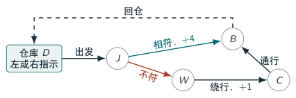
同一段记录里还有站牌、经过的步数和耗费，能读出奖励以外的数。若总在转角向左，两步内会不会到 这一问题在左指示下答 1，在右指示下答 0；到 还要几步这一问题在左指示下答 1，在右指示下答 3；途中拿到的奖励在左指示下是 4 分，在右指示下是 1 分。这些数各有用处。
第一种用处是充当状态。站在仓库预测总向左时两步内是否到 ，左指示报 1，右指示报 0。这个数记进状态、随递推带到转角，带的就是第 18 章要机器人记住的那一位指示；若到了转角再算这个预测，两种指示已分不开。第 20 章用一组这样的预测构造状态。
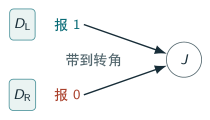
第二种用处是规定技能何时结束。到 即停这个问题的停止条件，也规定了技能去 何时交回控制；还要几步这一问题告诉上层调用它要花多久，左指示 1 步，右指示 3 步。第 21 章用这样的停止条件定义技能。
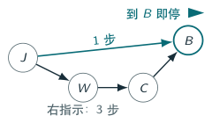
第三种用处是组成技能的模型。对向左走到 为止这一技能同时预测途中奖励与步数，就得到一张小表；规划时查这两个数，不必真走一遍，这是第 22 章的模型。本章 19.5 节先讲最直接的一种用法：计分改了，用已学的预测重新算分。
这些预测都不是奖励，第 15 章所列默认条件的第⑤项“只预测奖励”因此要撤去。第 17 章用 TD 误差与资格迹在一条不停的经验流上学习主奖励的价值。这套机制只用到三样东西：每步累积什么（累积量），何时停止累积（延续），按哪种策略展望未来（目标策略）。撤去第⑤项以后，这三样都由问题自己规定，而且提问时的走法不必等于实际的走法。
问题从一个变成许多个以后，样本、计算与选题三处同时吃紧。第一，问题常问若在转角改向右会怎样，记录里机器人在转角总向左，向右以后发生什么，一条样本也没有。
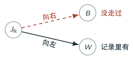
第二，问题多而时间少。每个时刻只交互一次，成百上千个问题都要从同一条转移里各取所需，不能为每个问题另走一遍。
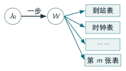
第三，没人指定该问什么。从转角问下一步到 吗，答案永远是 0，报得最准却没有用；两步内到 吗这一问题随指示变，才带有信息。
第 1–12 章只学一个问题：累积奖励、常数折扣，离策略时也只有一个目标策略（第 6 章）。第 6 章的重要性比只为一个目标策略处理过第一处困难；只有一张表，没有第二处；问题由奖励写定，也没有第三处。问题从一个变成许多，三处困难才一起出现。本章的方法依次回应它们。对第二处，同一条转移对每个问题各做一次 TD 更新：第 5 步 这一条转移，把两步内到 的估计从 写成 ，把到 还要几步的估计从 写成 （19.3 节）。对第一处，要求行为偶尔试过目标走法用到的动作，再用重要性比 修正，线性逼近下用 GQ() 保持稳定（19.4 节）。对第三处，主学习器意外时回看几步、登记候选问题，再按留下与不留这个问题的配对全程回报差筛选（19.6 节）。
预测可以由经验核对：报出两步内到 的可能性，两步以后就能对照。例如在仓库报 ，两步以后看到没到 ，就知道这个数偏高还是偏低；许多这样的预测合在一起，就是机器人关于这座仓库、可以逐条检验的知识。检验它不必等谁来批改，也不必懂它内部怎样表示。
不同意见 有人认为知识不止预测： 在 的下一站这类结构性知识，要写成预测得先选走法和期限，并不自然。也有人指出可检验只是原则上的：离策略问题问的是没走过的走法，经验里可能一直没有对照样本，19.4 节的覆盖条件讲的就是这件事。
累积量与延续课件
一个预测问题要说清每步记什么、记到什么时候停。这两件事各用一个量来写。
累积量（cumulant）是由这一步的转移算出的一个数，。下标是 ，因为要等这一步走完才知道。奖励 是累积量的一种；本步到没到 的 或 （到站信号）是一种；每步记 的时钟也是一种，加起来就是步数；本步测得的含噪读数也可以作累积量。选定累积量，就是选定读记录里的哪一行。
延续（continuation）也由这一步的转移算出，，它决定后面记下的数还算多少。取 ，后面照算；取 ，这一次查询到此结束，后面记下的数一概不算；恒取常数 ，就是前几章的折扣。延续写在转移上，所以可以随地点变：到 那一步取 、别处取 ，问的就是到 为止。
回报把两者连起来： 第 个累积量的权重是它前面 个延续之积，延续一旦取 ，后面的权重全部为 。把 读成这一步停下的概率， 就是停下之前累积量之和的期望。延续恒为 、每步记 时，平均记两步，等于 的时间尺度；19.3 节 Nexting 的四个折扣就按这个换算成时间。
算例用八步记录的第 4 到第 8 步。第 3 步回仓看到右指示，第 4 步到转角，状态记作 ；第 5 步向左到 ，第 6 步到 ，第 7 步到 。问到 还要几步：每步累积量为 ，到 那步延续为 。
| 步 | 到达 | 这一项的权重 | ||
|---|---|---|---|---|
| 4 | 1 | 1 | 1 | |
| 5 | 1 | 1 | 1 | |
| 6 | 1 | 1 | 1 | |
| 7 | 1 | 0 | 1 | |
| 8 | 1 | 1 | 0 |
：第 7 步延续为 ，其后权重都是 。只把延续换成常数 ，同一段记录给出 ，地点不再起作用，这已经是另一个问题。同一份记录、同一个累积量，延续一换，问题就换了；19.1 节再用到站信号演示一次。转移上的延续采用 White（ICML 2017，§2）的写法；cumulant 一词见 Sutton 与 Barto 第二版 §17.1。
不同意见 有人主张把延续叫“终止函数”或“折扣函数”，Horde 原文就用 表示随状态变的终止。本课用“延续”，是因为取 表示继续、取 表示停止，名字和数值的方向一致。第 21 章的技能终止概率 与它的关系是 ，19.5 节的选项模型写出这一关系。
对象是行为策略 产生的一条不分回合的经验流，递推状态 由设计者给定，转移 未知。给定一组问题 ，（目标策略、累积量、延续，定义见上），求每个答案 每个原始步只与环境交互一次，所有问题共用这一条转移；进一步还要决定该问哪些问题。相对第 18 章，撤去条件⑤“只预测奖励”：记什么、何时停、按哪种走法，都由问题规定。主算例是仓库第 5 步：机器人从 走到 ，这一条转移能同时改哪几张表、各改多少？19.3 节手算：到站表从 写成 ，时钟表从 写成 。
预算 每个原始步对 个问题各更新一次，计算与存储为 ，不随 lifetime 增长；问题越多，每个问题分到的计算越少。
怎样判定做成了 分两层。每个答案的误差小、离策略下更新稳定（19.4 节）；该问哪些问题，看留下与不留这个问题时的配对 差（19.6 节）。配对差是随机量，要几对 lifetime 才分得开，取决于配对差的方差与想分辨的差距，样本量按第 24 章的规则定。
不同意见 有人认为设计者给出的一组问题本身就是先验，答得再准也代替不了学习状态；第 20 章从这里接下去。也有人认为，同时学许多问题会摊薄每步计算，应先少问；按 的预算，这是一个要事先写清的取舍。
本章六节排成一条链，每一节解决上一节留下的一个困难。前四节是主线，全部在仓库主例上算：19.1 节把预测问题写成三项规格，只定义了答案；19.2 节说明答案满足一个线性方程，带期限和预算的问题把剩余步数与预算记进状态，仍是这个方程，但方程要用模型才能算；19.3 节用一条实际转移代替模型，对每个问题各写一张表；目标走法没被执行时这条转移不给样本，19.4 节加上覆盖条件、重要性比与 GQ()，结果测不到也是数据给不出样本，同一节给出区间。后两节讲答案怎样进入控制（19.5 节）和问题从哪来（19.6 节）；问题的用处要看答案读进控制后主任务的变化，所以筛选放在用途之后。全章的状态递推都由设计者给定，第 20 章撤去这一条件。
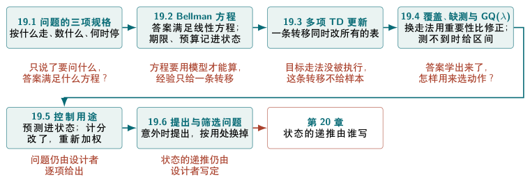
下表按“方法—解决的困难—留下的困难”排列各节，留下的困难由下一行处理。
| 节 | 方法 | 解决的困难 | 留下的困难 |
|---|---|---|---|
| 19.1 | 问题的三项规格 | 把到达时间、命中、占用写成同一种预测 | 只定义了答案 ，它满足什么方程 |
| 19.2 | GVF 的 Bellman 方程 ；把 记入状态 | 给出线性方程与唯一解的条件；有约束的可达性仍是 GVF | 要用 ，经验只给一条转移 |
| 19.3 | 多表 TD（算法 19.1） | 一条转移同时更新所有问题 | 目标动作没被执行时，这条转移不给样本 |
| 19.4 | 覆盖、重要性比 、GQ()（算法 19.2）；缺测时给区间 | 离策略学习；线性逼近下的稳定更新；不偏于已核验样本 | 答案学出来了，怎样用来选动作 |
| 19.5 | 预测进状态、作辅助损失；共用策略与延续时重新计价；选项模型即两类 GVF | 预测怎样改变主策略；奖励改变时不必重学后果 | 问题仍由设计者逐项给出 |
| 19.6 | 意外时登记候选；配对 差定义用处，在线代理决定替换（选读：算法 19.3、19.4） | 从经验提出问题，按对主任务的用处筛选 | 状态递推 仍由设计者写定，第 20 章处理 |
不同意见 有人主张先讲问题从哪来、再讲怎样学答案，因为没人给问题时前四节无从下手；这里按由易到难排，先讲给定问题的情形。也有人主张把期限与缺测单列一节，因为它们改变了能报什么；这里按它们用到的工具归类：期限用 19.2 节的方程，缺测用 19.4 节的重要性比与识别条件。
19.1 预测问题的三项规格课件
右灯亮起后到了转角 。机器人若向左，会经过 才到 。从转角起算，第三步到 ，所以两步内能否到 这一问题这次的答案为 0，第一次到 需要多久这一问题则为 3 步。左灯下仍向左，一步就到，两个答案都是 1，单位分别是事件指示和原始步。若途中打滑，这两个样本都可能变化。机器人预测的是给定起点和未来走法时，这类样本的条件期望。
普通价值与通用价值函数
普通折扣价值固定走法 ，把每步奖励 代入 ，再取条件期望。通用价值函数（general value function，GVF）保留同一递推，把按哪种走法、每步记什么、何时停三项交给问题指定。三项合起来记为 GVF 问题 ：目标策略 是此后的走法，可以不同于实际产生数据的行为策略 ；累积量 与延续 的定义和算例见章首“累积量与延续”一节。于是 这里 表示历史。假定展开后的回报可积。取 就回到普通折扣价值。若问首次到 的用时，每步 ，到 的那步令 ，则期望以步为单位，须假定期望到达时间有限。到站当步照样计入，配送随后继续。Sutton 与 Barto，第二版，§17.1 · White，转移上的延续，§2
展开后每个未来累积量的权重是它之前各步延续的乘积。Horde 原文另有结束时的终值一项，这里并入累积量（19.4 节 GQ() 中的 ）。第 14 章 14.3 节已经用过“GVF”这个名字，这里给出正式定义。前几章见过的量都能写成这三项：
| 量 | 目标策略 | 累积量 | 延续 |
|---|---|---|---|
| 普通折扣价值 | |||
| 第 16 章的差分价值 | |||
| 第 17 章的每趟回报 | 在转角向左 | 到 或 时 ，否则 | |
| 到站信号 | 本步是否到 | 到 时 ，否则 |
四行读的是同一段八步记录，相对普通价值，后三行各改动了一到三项。第 18 章把 写到对奖励充分；本章的问题若读别的信号， 也要对这些信号充分，条件才能从历史 换成状态 （19.2 节）。
这三项只规定问题和它的真答案 ，没有规定怎样从数据求出它。学法是另一层选择：可以等完整回报作蒙特卡洛平均，也可以按一步展开作时序差分自举（19.3 节的算法 19.1）；行为与 不同时要加离策略校正，表格放不下时改用函数逼近（19.4 节的 GQ()）。同一个 可以配不同学法，所学数值的偏差与方差不同，所指的真答案不变。
八步轨迹的奖励、事件与时间
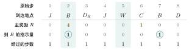
第 2 步到达 得 4 分，第 7 步同样到达 却得零分。选定累积量，就规定了每一步读图中的哪一行。若以主奖励为累积量、折扣为 ，八步对普通折扣回报的贡献为 ，还须接上八步以后的折扣回报。若预测的是到站事件，则读到达后的站牌。
同一个折扣 配三种累积量，前八项之和如下。
| 读哪一行 | 前八项之和 | 问的是 |
|---|---|---|
| 主奖励 | 能得多少分 | |
| 到站信号 | 多快、多常到 | |
| 时钟（每步记 1） | 还要走多久 |
完整回报还要加上 ；取 时，时钟一行就是步数。换一行读不需要新的经验，但要另配一个预测器：经验只有一条，问题有几个，预测器就有几个。
首次到达与累计占用
从八步记录的开头 起算，令 表示本步结束时在 。它在第 2、7 步为 1，其余六步为 0。取 、期限八步，用 表示行动前的剩余步数。若 ，第一次到 就停，这个回报取 0 或 1；在这条记录上取 1。若 ，两次到 都计入，八个到达时刻中有 2 个处于 ，除以 8 得到本段在 的占用比例 。前一项的期望是命中概率，后一项除以 8 后的期望是八个到达时刻的平均占用概率。累积量相同，只改延续，就换了问题。
常见的误读是把占用比例 当成八步内到 的概率；那个概率是前一项的期望，这条记录上它的样本是 1。占用的期望除以 8，等于在八个到达时刻里均匀抽一个、它恰在 的概率。若起点本身就在 ，还要另行约定起点算不算到达；本例从 出发，没有这个问题。
若另外规定首次到 或 就停止，那么右灯这次在 停止，其停在 的样本为 0，随后从 走到 已在这次预测之外。第 21 章 21.1 节用这种停止规则定义技能的交回。
延伸：到站、告警与超限事件的三种读法
固定无噪声的去 C 路线 ，从 A 出发需要 6 步，到达时获得外部奖励 3。要学的有两项预测：到 C 的剩余时间和到 C 前的外部奖励。前者每步累积时间单位 1，后者累积沿途任务奖励；两者采用同一假定行为，并在到达 C 时结束预测。机器人到 C 后仍继续工作。
这两项预测本身都不是控制目标。配送取舍仍由长期外部奖励规定，时间预测用来比较不同执行的耗时。更一般地，回充决策还需要能耗和耗尽概率等问题，这要求同时规定累积量、目标策略和停止事件。
门口例把记下的门宽和本次查询的剩余步数保存在 中。同样看到一扇窄门，问接下来一步和问接下来两步，所求的量可以不同。在一段连续直行的轨迹中，第一步安静，第二步告警，于是 依次为 ，本趟结果 。若把直行的基础奖励 和告警扣分 在第二步结算，同一条经验的外部奖励依次为 。在相同起点、相同行为和期限下，可用多趟实际结果检验预测概率；单趟是否告警不能验证概率校准。两路同长、后继分布相同时，实际选路才由直行期望 和绕行奖励 的比较决定。温颖，通用价值函数学习，§6
- 预测回充时间：在给定回充策略下，每步 ，到达充电座后 ，此前为 1。答案的单位是原始步。
- 预测回充能耗：保持同一策略和停止规则，令 为本步能耗。答案的单位是能量。
- 预测先耗尽电池的概率：在到达充电座或电池耗尽两者第一次发生时结束；只有结束原因为电池耗尽时 ，其他时刻为 0。若过程几乎必然结束，回报就是一个事件指示，其期望就是该事件概率。
普通价值函数取 、，是同一语言中的一种问题。GVF 扩大的是可以学习的预测对象；TD、蒙特卡洛和离策略方法规定怎样学习答案。
19.2 GVF 的 Bellman 方程与唯一性课件
假设沿 行动，可由保存的状态和实际反馈算出 与 ，且所问的条件均值能在状态上递推。将回报拆成首步及其余部分，分四步得到方程：
- （定义）；
- （回报递推）；
- （全期望，要求 对 充分）；
- 。
其中累积量均值 ，带权核 是按延续打折的转移矩阵。向量形式为 。第 3 步要求 和 在所有合并到 的历史上一致，否则方程只对历史成立，要在历史上预测，或按第 18 章 18.3 节扩充状态。下标 提醒 与 随问题而变；延续恒为常数 时带权核就是 ，方程回到第 4 章的策略评价方程。记号 留给第 21 章 21.1 节的截断时长。
已知模型时可以算出期望备份 ；实际首步则给出样本目标 。固定表的当前版本，。若代入真值 ，备份保持真值。把备份连用 次，：前一项是前 个累积量的期望，末项是 步之后的尾值，乘着前 步延续之积。末项趋于零，解才唯一，见下一小节。两步内到 的问题： 向左必到 ，本步 ，故 ； 的最后一步只到 ，故 。White，任务规格与转移依赖的延续
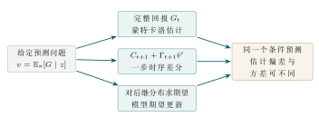
方程的唯一性条件
在有限状态、累积量有界时，若带权核的谱半径 ，则 是唯一解。级数的第 项是回报中第 个累积量的期望贡献。每行和均严格小于 是易检验的充分条件，但不是必要条件。
条件也可以用延续来说：从每个 出发，，即延续迟早归零。这个期望等于 在 处的值。核非负，所以它对每个 趋于零，当且仅当 ，也就是 。行和都小于 1 时，论证与第 4 章 4.2 节相同：备份是压缩映射，只是把 换成了逐步的 。把级数展开，第 项给第 个累积量乘上前 步延续之积，与回报的展开一致。
仓库时钟是一个例子。 在转角向左，状态取 ，每步 ，到 时 ： 前两行和为 1，谱半径却为 0：，从哪一格出发都在三步之内到 停下，级数在第三项后为零。延续恒为 时每行和都是 ，，解也唯一。反例是单一状态、、，延续之积恒为 1：由回报定义 ，方程 却对任何常数成立，此时 。方程有多个解时，TD 的固定点可能停在错误的常数上；多步备份怎样把尾值消去，见章末补充阅读的证明。可积、闭合和方程的唯一性各自回答不同的问题。
期限与预算下的首次到达概率
方程也适用于带期限和预算的问题。把剩余步数和剩余电量记进状态，按第 18 章的充分性，问题仍可写成 ，仍满足本节的方程。剩余步数每步减一，用完时延续为零，所以延续之积至多 步就变成零，上面的唯一性条件自动成立。下文的耗费指每步用掉的四区仓库电量，数值为设定： 耗 1， 耗 1， 下坡耗 0；要问的是三步内、两格电之内能否到 。电量在本章还出现两次：19.5 节拿耗电这项 GVF 按电价重新比较路线，19.6 节的四区仓库让学习器自己挑出到桩的步数这个问题。
目标区记作 。每步观测新状态 与耗费 。记这个可达问题为 ，定义 为按 行动、剩余 步、剩余预算 之内首次到达 的概率；下标是这个问题，与本章其他 GVF 的答案同一种写法，不与转移概率 混用。把 作为状态，下一步才能判断是否到期或超支。这里假定状态加上剩余预算与期限，足以预测后继、耗费与是否到达；否则还要保留更多历史。对尚未到达、尚未超支的状态，一步转移给出 越界、成功或到期时延续为零；其余情况下传递 。右灯转角向左，依次经 到 。若为这三步设耗费 ，取 ，则 时成功概率为 ； 时第二步只到 ，到期为 ； 时第二步累计耗费 2 已超支，为 。有期限、有预算的可达性问题因此不需要新理论。要求平均耗费不超过预算、逐条路径都不超支、允许一定失败概率，是三个不同的规格，这里对应第二种。可以把 当作独立的可行性要求，例如只接纳成功概率至少 .8 的技能，再在其中比较主回报。White，2017，§§2–3
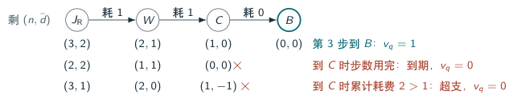
19.3 一条转移上的多项 TD 更新课件
方程中的 与 要用模型才能算。经验只给一条实际转移：把期望换成这一步的实得量、尾值换成旧表 ，得一步目标 ，TD 误差 。
同一条转移的两项时序差分更新
第 5 步，右灯下在 向左，只看到自己到了 ，还不知道后面的实际结果。两项问题的目标策略都与行为一致，取步长 。到站信号的表以剩余步数为索引：在 启动时还剩两步，到 只剩一步。
| 从 预测 | 后继旧值 | 目标 | |||
|---|---|---|---|---|---|
| 到站信号：两步内到 | |||||
| 时钟：到 的步数 |
写入 。只有 这一格改变， 的旧值留到它作为出发状态时再更新。真值分别为 与 步：两项误差由 、 降到 、。样本目标使用旧表，不保证一次就等于真值。若等待完整样本，两个问题分别要到第 6 步超时和第 7 步到 时才揭晓。
表中两张旧表都是设定的初值，本身未必对：时钟在 的旧值 就偏小， 要 2 步。常见的错误是顺手把 也改成 2；这一步只写出发状态 。
算法 19.1 一条经验流上的多项表格 GVF
算法 19.1 从行为策略的一条经验流学习多项预测。 固定每个问题的目标策略 、累积量 与延续 ，各自维护一张表；有期限的问题把剩余步数也作为索引。假定相关状态及其可读信息足以确定这些问题，信号可核验；在目标策略可能采取的动作上，行为策略须给正概率。Sutton 等，Horde，§§3–5
初始化各问题的表 V[j]
在每个原始步：
从 b 在 z 抽取动作 a，保存行为当时选中它的概率 mu，执行一次并观察转移
对每个问题 j 从同一条转移计算 c[j]、Gamma[j]
若 Gamma[j] 为零，令 y[j] = c[j]
否则用该问题的旧表令 y[j] = c[j] + Gamma[j] * V[j][z']
对各 j 写 V[j][z] += alpha[j] * pi[j](a|z) / mu * (y[j] - V[j][z])
到 z' 继续与环境交互固定旧表，令 为第 个问题的期望备份。在状态 对各动作求和，，故样本增量除以步长的条件期望为 。行为若读取额外记忆，应保存按实际抽样信息确定的概率。未判定的事件须保留未决；只在能判定的尝试上更新，可能改变目标人群（19.4 节）。Horde 原文在线性函数逼近下采用梯度 TD，本算法说明表格情形如何共享一步样本。
伪代码里的 mu 就是 ，换名是为了不与转移概率 混淆。有期限的问题，表的索引是状态加上该问题自己的计数，例如剩余两步，到后继时剩余步数减一。无论更新多少张表，环境都只走一个原始步。停止的分支只留累积量，不读后继的值。目标策略与行为相同时重要性比为 1，19.3 节开头的算例就是这种情形。
原型：Nexting课件
仓库里一条转移更新两张表；真实机器人上，同一个困难放大了一千倍。Modayil、White 与 Sutton 让 Critterbot 机器人沿围栏的墙走，绕一圈约 40 秒，每步 100 毫秒，边走边学了 12 万步，即 3 小时 20 分。机器人以 的概率做随机动作；墙边有一盏灯，绕到那里才会亮。
53 个传感器经过编码得到 6065 个二值特征，每步约有 457 个取 1。预测的对象有两类：53 个传感器本身，和 487 个随机挑出的特征；每个对象配四个折扣 ，大致对应 .1、.5、2、8 秒的时间尺度。于是共有 个预测。所有预测的目标策略就是实际行为，各用一个同策略 TD()，，步长 ，即按激活特征数归一化；它们共用同一组特征。
原文图 2、3 显示，机器人能在灯光出现之前就预测它；图 4 显示，各预测与离线最优解的差距随时间趋于消失，大部分学习在 30 分钟内完成，2.5 小时后的预测与离线最优解吻合。开销是每个周期 55 毫秒，内存 400 MB，落在 100 毫秒的周期之内。按本课程的估算，每步更新量约为 万次乘加。Modayil、White 与 Sutton，Multi-timescale Nexting，Adaptive Behavior，2014，图 2–4
它显出的持续强化学习特点是：知识由许多随经验一直在长的预测组成，单个价值函数只是其中一个；每步的计算量是定数，问题越多，每个问题分到的算力越少。这对应本章开头的第二处困难。局限有四处。只做预测，没有把这些预测接进控制。目标策略就是行为本身，完全碰不到 19.4 节的覆盖问题。沿墙走是一圈圈重复的，30 分钟约走 圈，相当于把同一段经验看了几十遍。问题由设计者按每个传感器配四个折扣批量写定，没有回答 19.6 节的问题从哪来。
不同意见 有人指出，与离线最优解吻合这一结果只说明学到了这组特征下线性解能达到的最好；若特征里没有某条线索，离线最优解也会错。也有人认为周期环境太友好，换到不重复的大世界，30 分钟学完的说法未必成立。还有人从另一面辩护：正因为是真实机器人、真实噪声、真实时钟，55 毫秒这个数比模拟更能说明算得过来。
同一次访问上的 TD 与蒙特卡洛目标
另一个含有打滑的三站配送实验提供了逐步运行数据。从 A 去 C 的规则已经给定，现在单独估计这项行为从 A 首次到 C 的期望原始步数。第 39,997 步机器人仍在 A，接着六步到 C，第 40,003 步完成。这趟行程给出的时长样本为 。第一步结束时，机器人只知道自己在 A 多用了一步；到 C 还要多久，仍须从 A 的后续经验估计。实际行动轨迹
在第 39,997 步的实际自环上，假定写入前 。时长 TD 的目标为 ；从这同一次访问等到终点，完整回报是 。若各自从同一张表出发、只比较对首次访问的这一次写入，学习率 分别把 A 更新到 、。两种方法都取 ，分歧来自尾部使用了已有估计还是随后实得的步数。这是第 5 章在同一访问上比较 MC 与 TD 的方法，这次用计时和自行规定的停止事件代替了回合回报。Sutton 与 Barto 第一版，§6.1
自举信息沿路线的传播
若真实行为就是 ，表格 TD 把当前预测加上 。去 C 的时间头每步使用累积量 1；奖励头使用实际外部奖励。两个头都先读取旧值构造目标，再更新各自参数。到达 C 的最后一步，时间目标为 1，奖励目标为 3；后续继续配送不会进入这两个直到 C 的预测。
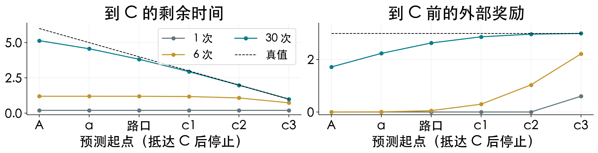
从全零表格、步长 .2 开始，第一次抵达 C 只使 处奖励预测变为 .6；其他奖励预测仍为 0。下一次经过 ，它才从后继估计读到这项信息。时间头每一步都收到累积量 1，因而更早在沿途产生非零更新。每次到 C 后沿原路返回 A，环境和参数不重置。去 C 头只使用去程转移，回程转移计入交互成本。完整计算有 200 次往返、2,400 个原始步，其中 1,200 个去程转移更新这两个头。
延伸：事件概率的 TD 学习与路线选择
事件概率的 TD 学习与路线选择
考虑另一条两步路线 。终点反馈报告总能耗是否超过固定预算。固定沿此路线执行的策略 ，令每步累积量 为本次到达超限终点的指示量；到达任一终点时令 ，其他时候为 1。从非终止状态 或 出发，因为路线只在最后报告一次该事件， 对这一回报取条件期望，得到的是超限概率，平均能耗是另一项问题。假设用于核对的真实超限概率为 .4，那么 。实际学习器不知道 0.4，只看到这次究竟超限还是未超限。
取初始预测 ，步长为 .5，逐转移 TD 更新 本次先观察 ，其目标仍为 .08，所以 不变；再观察超限终点，目标为 1， 的预测升到 .54。下一轮重新从 到 ，目标才变成 .54，使 升到 .31。远端反馈不会在没有计算路径的情况下立即改变所有更早状态；再次访问、资格迹和模型规划是不同的传播途径。
例如决策器规定先保留预测超限概率不超过 .1 的路线、再从中选较快者这一规则，而另一路线较慢、预测超限概率为 .05。快路线的起点预测从 .08 变成 .31 后，下一次起点决策将改选慢路线。第三条转移发生时已经选了快路线，不能用更新后的预测追溯撤销动作。这里展示预测如何被读取，不把三次样本更新所得的 .31 当作风险置信上界，也不声称该规则已满足真实风险约束。
19.4 覆盖、缺测与 GQ(λ)课件
本节处理章首三处困难中的第一处：只有一条实际经验，却要回答许多按别的走法提出的问题。先看覆盖条件决定哪些问题能从记录里学，再看重要性比怎样纠正动作分布、Horde 怎样把同一办法用到许多 demon 上，然后是线性逼近下的 GQ()。然后写重要性比连乘带来的方差；再看另一种拿不到样本的情形，累积量缺测；最后是特征共用与特征在学带来的误差和移动目标。
目标策略与行为覆盖
取两步命中问题。左灯时向左、右灯时向右都能一步到 ；反向则来不及。这四个条件后果能从题设的路线算出，但八步记录中的行为 在两个转角都向左，只经历了左灯向左命中和右灯向左超时两格。若右转路线未知，总向右的目标策略 需要相应状态下的右转经验。能用重要性比 纠正动作分布的前提，是在目标策略可达、预测仍在延续的状态上满足覆盖条件 。记录当时的行为概率和区分两种灯的记忆，分别解决行动抽样和历史辨认的问题。Sutton 等，Horde，§§3–5
八步记录对两条走法的覆盖如下。
| 记忆状态 | （总向左） | （总向右） |
|---|---|---|
| 左指示 | 命中，第 2 步记录到 | 超时，记录中无此样本 |
| 右指示 | 超时，第 5、6 步记录到 | 命中，记录中无此样本 |
右列的两格只能由路线模型推出，属于模型知识，经验里没有。只在右转结果上不同的两种环境，会产生完全相同的这批数据。 就是第 6 章的重要性比，每个问题各算各的。
即使状态与算子正确，数据仍只来自实际执行的行为。若两种世界在行为策略会采取的动作上完全相同，只在目标策略会用而行为从不尝试的动作上不同，可观测轨迹具有相同分布，真值却可以不同。覆盖解决的是能否取得区分两种世界的数据；它不能向已经丢掉的历史摘要补回信息。覆盖只需在目标策略可达、仍在延续处成立，它只让重要性比有定义；期望增量要对，还要记下正确的行为概率；方差与尾值误差也不因覆盖而变小。Horde
重要性比为 4 的一步
设行为策略 在右灯转角 以 概率向右，两项问题的目标策略 都要求在此向右。向右一步就到 ，在期限内命中，所以两个问题在这一步都取 。令步长为 ，到站信号旧估计为 ，时钟旧估计为 步；重要性比为 ，于是分别写入 和 步。抽到左转时 ，两项都不写。对行为求平均，，与按 直接右转的增量相同。代价是方差：若步长取 ，到站信号会写成 ，超出概率的取值范围。
| 问题 | 抽到的动作 | ||||
|---|---|---|---|---|---|
| 到站信号 | 右 | ||||
| 时钟 | 右 | ||||
| 任一问题 | 左 | — | — | 不变 |
两个旧值 与 是设定的初值；重要性比是第 6 章 6.7 节的重要性比。每抽到一次右转，就按四次计。线性逼近和多步迹会把这种放大传到许多权重上，GQ() 与梯度 TD 就是为此设计的；多步连乘的方差见本节“离策略的代价”。
右灯转角的一条转移要同时写四张表：到站信号与时钟两种累积量，各配同策略 与离策略 。选“第 5 步的设定”再按“这一步向左”，计算过程按 复现 19.3 节的 与 ， 的两张表因行为从不向右而无样本可用。选“重要性比为 4 的设定”再按“这一步向右”，，两张 表写成 与 。“按 抽 100 步”显示多次更新后的走向：把 调到 ，，到站信号在 两侧来回跳；同策略表停在 旧值决定的极限，行为右转概率为 时为 与 ，与真值 、 不同。
换用新的递推状态时，可以先保持 ，在同样的来路上检验新头能否读出原预测。只要把累积量改成新特征的激活，或让目标策略未经适配地读取新编码，所得到的回报就可能属于另一个 。见第 20 章 20.6 节表示变更时固定的预测问题
原型：Horde课件
仓库里一条行为评一个向右的目标策略；Horde 在同一个机器人上同时评八个。Sutton 等把每个 GVF 叫作一个 demon：它有自己的目标策略、累积量、折扣和终止，用 GQ() 一类的方法从共同的经验流里离策略地学。机器人每步约 100 毫秒。
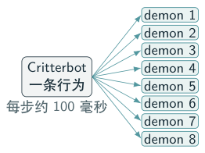
论文报告的实验有两类。预测：一个 demon 预测离障碍物还有多久，在三种红外量程下都准（图 2）；另一个预测离停下还有多久（图 3）。控制：8 个 demon 并行离策略学习，共 10 万步，，各自最大化一个传感器的读数（图 4、5）；一个 demon 学会朝光走，（图 6）。文中还说这个架构可在笔记本电脑上实时运行数千个 demon；这是对架构能力的说明，实验只报告了 1 个或 8 个 demon，引用时要分开。Sutton、Modayil、Delp、Degris、Pilarski、White 与 Precup，Horde，AAMAS 2011，pp. 761–768，图 2–6
规模由一年后的工作给出。White、Modayil 与 Sutton 在移动机器人上记录七小时经验。他们在同一条行为流上并行学一千个随机给定目标策略的 GVF，每个问题用梯度 TD（GTD()）更新，经验按到达次序只读一遍，不存回放。每步计算随特征数与问题数线性增长；原文报告四核桌面机上一千个问题的一轮更新约 85 毫秒，落在 100 毫秒的控制周期之内。少数目标策略被插入真实执行，用实际结果核对预测；其余问题只能用在线投影误差估计量评价。投影误差衡量方程拟合的进展，它不等于预测与真实结果之间的误差；它与控制回报之间还隔着这些预测有没有被读来选动作这一步，19.6 节的配对差量的就是这一步。White、Modayil 与 Sutton，2012，§§5–6
它显出的持续强化学习特点是：智能体只有一个身体、一条经验流，想知道的事情却很多，其中许多是如果换一种做法会怎样；离策略学习让这些问题都从同一条经验里取材。这对应本章开头的第一处困难。局限：行为由设计者选得很宽，各方向的动作都常出现，覆盖是送上门的；Horde 论文本身只有 1 个或 8 个 demon，一千个问题的那项工作只核对了少数问题的真实误差；学到的控制策略只被评估，没有接回机器人的行为，也就没有学到的东西改变以后的经验这一层。
不同意见 有人认为，宽行为加离策略学习回避了主要的难处。行为一旦要追求某个目标就会变得集中，许多目标策略的动作很少抽到，重要性比的方差变大，学习变慢甚至发散。也有人认为 demon 的问题由设计者逐个写定，这些预测算不算知识，要看能否被用来做决策，论文没有展示这一点。对一千个问题的那项证据，也有人提醒，85 毫秒取决于当年的硬件与特征维数，表示变大后线性的常数也不可忽略，结论宜限于算得过来。支持者回应：Horde 证明了许多离策略 GVF 能在真实时钟内一起算，怎样选问题、怎样用答案，是 19.6 节和第 21 章以后的事。
GQ(λ)：线性逼近下的动作值 GVF（选读）
仓库能用表格，因为地点只有几个。把电量 到 记进状态，每个地点要乘上 档电量，每张表就大 倍，逐格既存不下也学不过来，于是改用特征，让相近电量共用权重。Horde 的动作值问题还给定第一步动作：第一步按给定的 ，从下一步起按目标策略 。固定一项问题，令 ，用固定特征使不同状态动作共享信息。GQ() 同时维护主权重 、辅助权重 和资格迹 。不同问题可以读同一条转移，分别更新各自的三个向量。原文把辅助权重记作 、延续记作 、特征记作 ；本课程中 只表示历史，特征沿用第 9、17 章的 ，这里改记 、 与 。
算法 19.2 线性 GQ() 的预测更新（Horde 形式）。 取固定目标策略、兴趣权重一、常数迹衰减 及两个正步长 。行为策略须覆盖要评价的状态与动作。
- 读样本和后继特征。 把三个向量置零。每个原始步从 抽 ，收到 、本步累积量 与延续 。记 ，用目标策略计算 ，不用行为策略。若问题设有结束时的额外价值 ，原文取 。
- 校正传入的旧迹。 令 ，执行 。由旧主权重算 。其中 决定旧迹能否传入当前一步， 决定本步是否向后自举。
- 从同一份旧权重算好两个增量。 同时写入 估计 TD 误差在特征上的期望，用于主更新的自举修正项；它不是另一项传感器预测。
为什么重要性比没有乘在整次增量上？ 若目标策略在转角总向右，而 这一步向左， 只会切断从更早步骤传来的信用。 仍为 ，本次转移照样训练这一步向左、此后按 这一走法的 。把整个动作价值更新丢弃，会与所提问题不符。问到 还要几步时，每步累积 1，到 则 ，此前为 1；延续为零的那一步没有尾值，也没有主权重的自举修正。以上写的是固定目标策略的线性预测更新；变化的贪心策略和非线性逼近不能直接沿用其理论条件。Maei 与 Sutton，GQ(λ)，AGI 2010；Sutton 等，Horde，AAMAS 2011，§§4–5
为什么要辅助权重：离策略、自举、线性逼近三者同时出现时，普通 TD 可能发散；第 17 章 17.4 节的两站例里，平均 TD 方向会把预测推离真值。GTD2 与 TDC 用辅助权重估计 TD 误差在特征上的期望，沿投影 Bellman 残差的梯度下降；GQ() 是同一方法加上资格迹和问题规格。它是论文中的算法，这里作为延伸阅读。
离策略的代价课件
每步重要性比的均值是 ；连乘 步，均值仍是 ，方差却是 。重要性比为 4 的那一步已经显出单步增量被放大四倍，多步方法把重要性比连乘，放大就随步数指数增长。沿用那一步的设定：行为在 以 向右，目标策略总向右，于是 单步方差为 。连续 次这样的决策相互独立时，重要性比之积 的均值是各均值之积，二阶矩是各二阶矩之积，所以
| 不为零的概率 | 不为零时的值 | 方差 | |
|---|---|---|---|
五步时， 次里只有一次乘积不为零，那一次的值是 。估计仍然无偏，但几乎所有样本都是零，偶尔出现一个极大的数，样本平均要很久才稳定。
离策略多步学习因此处在两难之间：迹长了方差大，迹断了学得慢。GQ() 一类方法把重要性比乘进迹，，旧迹每步乘 。取 、：抽到右转时 ，连续三步旧迹放大约 倍；抽到左转时 ，迹被切断，只留新特征。
降方差的办法都在截短或压低这个乘积。最简单的是取小的 。Retrace 把每步系数换成 ，系数不超过 ，三步后至多 ；代价是重要性比大于一时少用了信息，多步回报偏离目标策略的回报，要更多步来补。（Munos、Stepleton、Harutyunyan 与 Bellemare，Retrace，NeurIPS 2016）GVF 越多，各问题的目标策略与行为差得越远，这个问题越突出，因为行为只有一个，问题却有成百上千个。
不同意见 有人主张放宽行为本身，让它覆盖更多问题的动作，Horde 的实验就是这样做的；反对者指出，行为一旦要为主任务服务，就不可能为所有问题都宽。
不完全核验下的达成概率
覆盖不足时，数据里缺的是目标走法会选的动作。另一种缺口是结果的读数：到站读数缺测，缺测机制未知时只能报一个区间。这不增加新的学习方法，改的是能报告什么；缺测机制已知时，校正的办法与上面的重要性比同一结构。
希望估计的是给定历史、指定策略和期限下的真实达成概率 。对第 15 章限时恢复带载供电例中的截止时验收，在截止步给出一次零或一的实测结果，随后终止预测，此前累积量为零、延续为一。若目标改成期限内至少成功一次，就需要监测此前的尝试，在首次达成时给一并终止，到期仍无达成则给零。两种 GVF 各自估计所定义事件的概率，提前短暂通电可能只满足后一项目标。若选择的信号只是面板曾亮，估计再精确，回答的也是另一项预测。
部分尝试会缺少交接时的负载读数。令 表示实际达成， 表示观测足以判定 。设在同一起始历史、同一策略下，能够判定的样本均分类正确。令 、 分别为观测到达成和观测到失败的概率。前者对应 的子集，后者对应其补集的子集，因此 上下界之差恰是未决概率。把所有未决当成失败，所得是下界；只对已核验的样本求平均，得到的是 。失败后才常常检查的智能体尤其容易把这种选择偏差学进价值函数。在 GVF 的写法里，未判定的步不能给累积量记零并令延续为零，那等于把它记成失败。
仓库里也有同样的缺测。设 处的到站传感器偶尔不上报，八步记录里“到 ”那一行就会出现空格。空格不能当 0，那等于说没到；也不能当 1。只在有读数的步上求平均，又默认缺测与结果无关。
固定询问的起点分布与目标走法，问两步内到 吗，所有询问分成三类。例如 记到到达、 记到未到、 信号缺失（三类比例为设定值），则 ；只用已判定样本得 。若对未判定组独立随机抽查，测得其达成率为 ，则总体概率为 。若事先把 定为可行性阈值，区间跨越了它，现有观测就不足以确认达标。要进一步缩小区间，可以取得独立的带载测量，按已知概率抽取核验机会，或引入可以检验的观测模型。若要估计另一种技能，两种行为的覆盖仍须另行检查。
若缺测来自已知概率的抽检，还可以给点估计。设可见条件 下读数保留的概率 已知，且给定 后缺测与结果无关，则 其中 是离策略时的重要性比，同策略时取 。这是逆概率加权（Horvitz 与 Thompson 1952）。两个条件缺一个，就只能回到区间。只在有读数的样本上求平均得到的 ，要再加缺测与是否到达无关的假设，才能当作总体概率。
在 100 次同条件尝试中，40 次测得正常供电、30 次测得供电失败、30 次缺少相应读数。这批样本的实际达成比例位于 至 之间；推断总体概率还需考虑抽样误差。任务结束后收到的需求取消消息可以影响未来的目标选择，无法补全此前的负载读数。反过来，延迟送达的电流测量只要对应当时的设备与评价时刻，仍可用于判定旧任务。
已解决的部分与条件 缺测机制未知时， 已是最紧的区间，不加假设无法缩短（Horowitz 与 Manski 2000）。若对缺测组随机复核一部分，复核概率已知，就能得到总体的无偏估计。调查抽样处理无应答的二阶段抽样就是这样做的（Hansen 与 Hurwitz 1946）；一般形式是按已知概率的逆加权（Horvitz 与 Thompson 1952）。复核组达成率若为 ，总体为 ，低于 的阈值；若为 ，总体为 。
已有做法与假设 离策略 GVF 的重要性比校正与逆概率加权是同一结构：前者校正动作分布，后者校正观测分布。两者都要求校正用的概率已知且处处为正。
未解决的部分 GVF 的答案靠自举时，一处缺测会经 传到前面许多步的目标。缺测机制随行为变，行为又随学到的预测变。部分识别的区间怎样沿 Bellman 方程传播，TD 在缺测下收敛到哪个集合，没有一般结果。复核本身耗费步数与电量，复核多少才划算，也要放进主任务的回报里算。
怎样检验 在仓库里让到站传感器按两种机制缺测：与结果无关；只在到达时缺测。操控复核比例（、、）。基准是只用有读数样本的平均，以及不加假设的区间。测区间宽度、区间盖住真值的比例，以及扣除复核耗费后的全程回报。重复单位是独立 lifetime。
逼近与特征课件
共用特征，就共用它分不开的地方；特征在学时，每个预测的目标都跟着动。GVF 学得多准，取决于特征能区分什么。
特征分不开。 问向左一步内到 吗： 答 ， 答 。这里要分清三样：问题 固定；真答案在 为 、在 为 ；训练信号是每次实际到没到 的 或 。若状态里没有记住指示，到了转角两种情形的特征完全相同，，线性预测 只能给一个值。两种情形各占一半时，最小化 给出 ，两处误差都是 ，数据再多也降不下去。把指示，或一个记住指示的预测，写进特征，误差才为零。后一种做法就是 19.5 节把预测写进状态的用法：GVF 既使用特征，也可以提供特征。第 18 章要求状态对奖励充分，这里每个问题都要求状态对它自己的累积量充分。
特征在动。 表格和固定特征下，一个问题只改自己的权重，不影响别的问题。深度网络里特征也由共享参数 学出，。主任务或别的预测更新了共享层，问题 自己的权重没动，预测也变： 例如 ，某次更新使 ， 降 。TD 目标 用的是后继状态的预测，也随之移动，于是每个问题追的都是一个移动的目标。
GQ() 和梯度 TD 的收敛条件假定特征固定、目标策略固定。Maei 与 Sutton，GQ(λ)，AGI 2010 特征在学、目标策略在变时，两条都不成立；再加上离策略与自举，就是第 17 章 17.4 节两站例里见过的发散组合。第 20 章讨论表示随学习变化带来的可塑性与遗忘，这里的移动目标是其中一个来源。
不同意见 有人认为共享表示是 GVF 的主要价值所在：许多预测一起训练，表示学得更好，移动目标是可以接受的代价；也有人主张为预测保留一部分固定或慢变的特征，换取稳定。哪种做法更好取决于任务，本课不下结论。
延伸：门口的目标策略覆盖、预测选取与测试
发现预测问题还需选择是否为它获取经验。最容易预测的信号可能只随时钟变化。对控制有用的信号则要在有关决定上区分备选行为；这种区分也可能由已有预测提供。检验新增预测的边际价值，需要在同样的行动与存储预算下，分别让控制器读取或舍弃它，比较以后真实选择的后果。
问题 规定要问什么，参数 估计答案。以读到准确窄门标记为起点，候选 GVF 估计连续直行时两步内发生告警的概率。第一次告警记 1，其余记 0，告警或满两步便停止预测。原课程设定的窄门风险是 。学习器并不知道这一数值；考虑一个除了该风险为 以外处处相同的环境。若它总绕开窄门，两个环境产生的实际观测和奖励就有相同分布，但连续直行的期望奖励分别是 和 ，最好的选择恰好相反。无论又遇到多少窄门，只要仍绕行，这些数据都无法区分两种答案。
即使在窄门直行过一次，也要问是哪一步。将该路线展开为两次动作，设告警只可能发生在第二步，途中转开的反馈在两个环境中也相同。若在这套行为下，窄门第一步直行的概率为 ，接下来在相同线索下继续直行的条件概率为 ，一次窄门相遇提供完整直行反馈的概率就是 。其中任何一项为零，都使两种风险在这套行为下不可辨识。若按充分的马尔可夫状态学习，来自不同行程的相应一步转移可以组合估计；每个由目标策略可达、预测仍在延续的状态都须有目标动作的支持。即使目标动作有正概率，有限 lifetime 中实际取得的有效样本也可能很少。Sutton 等，Horde，§§3–5 · 温颖，GVF 与离策略经验
一种检验是随机抽取部分窄门，完整执行直行并观测沿途实际获得的奖励。直行无告警得 1、告警得 ，在风险 时相对绕行的期望代价为每趟 1 分；实际比较学习器时，只将该趟真实所得计入全程，无需另外扣除期望代价。本课的门口实验把完整路线作为一次选择。若贪心选绕行，仍以 的概率探索直行。学习器只使用所选路线的反馈来学动作价值，没有中途转开或自动发现 GVF 的机制。
预测是否值得占用容量，还要看之后的行动。假设两种路线都可执行、宽窄等可能，宽门风险 、窄门 。准确的总体风险 会让只读它的控制器总是绕行，期望得 0；读取两种门况的条件风险，宽门直行、窄门绕行，期望得 。这一差额假定答案已经准确。若检验在线选择、学习和维护这个问题的价值，应在相同交互与计算预算下，从首次试探起比较各自实际取得的任务奖励。
再考虑发现绕行技能时的相反情形：原有配送策略总是直行。如果侧路的状况不改变直行见到的观测和奖励，那么侧路畅通或封闭都能产生相同的历史观测。试路时若反复看到侧面缺口，可以把到达它作为候选子目标，再用自己练习的后果来决定它值不值得保留。假定状态足以预测动作后果，一项确定性的绕行技能尚未被整段调用，送货中与它在同一状态选了同一动作的转移也可用于一步更新。到下一状态，按这项技能自己的停止规则计算已经结束还是要接上后继估计。转弯发生过一次，只给入口的一步提供了样本；要估计从这里直至缺口的整段后果，沿途仍需覆盖该技能所选的动作，或有另行验证的环境模型。学习哪些缺口值得追求，还需检验技能对配送和回充的长期用处。Sutton、Precup 与 Singh（1999），§5，式 18–19
有准确的条件风险时，总是直行的基线平均得 ；取得绕行技能以后平均得 。若探索和练习相对基线已少得 3 单位主奖励，随后面对相同门况分布且技能表现稳定，未来 次相遇的期望净增益为 。六次追平，七次才严格超过基线。这与上一段的 比较了不同的起点能力。
实际研究中，机器人只经历自己选择的那条路。可以比较等预算的独立运行：允许从传感经验提议、练习并淘汰候选，或将同样的存储空间、交互步数和每步计算留给其他预测与基本动作控制。从首次探索起累加实际主奖励，比较候选提出至首次改变行动所需的时间及其计算和存储开销。给出缺口标签和停止规则时，能检验学到它的收益；要检验能否发现它，则让候选生成也发生在经验流中。Alberta Plan v3，步骤 10–11 · 温颖，预测怎样进入控制
高预测误差可能来自不可约噪声，低预测误差也可能只是容易而无关的目标。因此，预测的选择准则应包括其实际用途：例如加入充电时间预测后，是否减少未完成任务的电量耗尽；加入门状态预测后，是否改变路线价值排序。若只评价预测损失，就无法回答这些问题。
19.5 预测答案的控制用途课件
预测帮主策略什么课件
前四节学的都是预测本身：问题怎样规定，答案满足什么方程，怎样从一条经验流里学出来。本节问另一件事：学了这么多预测，主策略得到什么。预测可以写进状态，也可以作辅助损失训练共享表示；两种用法都要用主回报核对。
用法一：预测进状态。 第 18 章的智能体状态由观测和动作递推得出，这里再把一个预测拼进去，策略读取拼好的状态： 仓库里，若递推丢了上次看到哪种指示，到了转角 就分不清 与 。这时最好的固定走法是总向左：左指示时三步一趟得 分，右指示时五步一趟得 分；平均每趟 分、 步，每步 分。加一个预测 ：从 出发、在 向左，两步内到 吗。它在 看到指示时算出，记进状态随递推带到 ，在 为 、在 为 ；若到了 再算，两种情形已分不开。把它写进状态，策略照它转弯，每趟三步得 分，每步 分。预测在这里充当记忆，把历史里对将来有用的那部分压成一个数。19.4 节“逼近与特征”里，特征分不开 与 时，在转角问的同类问题只能答 ；这里预测的答案反过来成了策略的特征，GVF 在使用特征的同时也提供特征。
用法二：辅助损失。 深度网络里，主任务与各预测头共用前面的层，参数记作 ，总损失为 辅助任务提供更多的监督信号，可能帮表示学得快；代价是梯度可能互相拉扯。只看一个辅助项，记 、，沿 走一小步 ，主损失的一阶变化为 取 ，：
| 与 的内积 | 主损失 | ||
|---|---|---|---|
| 降 | |||
| 升 |
时，辅助梯度中与主梯度方向相反的分量压过了主任务，合梯度与主梯度的内积变为负。
好处与难处出在同一处。 两种用法改动的对象不同：用法一改策略读到的输入，用法二改输入背后的表示。好处要从主回报上量，所以两者的难处可以对着上面两条式子逐项写出。用法一的收益是同一类策略在拼上 前后的主回报之差，它为正要两条同时成立：预测学得准，且它的答案带有主任务需要、原状态里又没有的信息。仓库例中两条都成立，预测恰好补上了忘掉的那一位；若预测只能在两处都答 ，拼进去也不改变任何选择。学得准这一点又要靠 19.4 节的覆盖、重要性比与特征条件，所以离策略的代价会传到这里。用法二的收益看式中括号的符号： 时辅助项帮主任务，小于零时， 越大越可能让主损失上升，上表的 与 正落在这一界线的两侧。权重要选，而且随训练阶段可能该变；内积是逐步的局部量，一时为负不等于这项预测对全程无用。Du 等用两梯度的余弦决定是否采纳辅助梯度，这是一种做法，不保证对所有任务都好。两种用法的最终检验相同：下一节（19.6 节）用配对的全程回报 之差量一个问题的用处，就是对这两种用法的统一核对。
不同意见 有人认为辅助任务的收益主要来自表示学习的正则化，与预测的内容关系不大；也有人认为，GVF 的本意是预测进状态，辅助损失只是借用了名字。本课把两者并列，以主回报为准。
两种用法的出处：Sutton 等，Horde，AAMAS 2011；Jaderberg 等，UNREAL，ICLR 2017；Du 等，2018，用梯度余弦调辅助权重。下一小节看第三种用法：奖励权重变了，直接用已学的预测重新计价。
已解决的部分与条件 表格或线性读出、特征固定时，一个预测只经读出影响行为，下一节（19.6 节）的配对差 量到的就是读出的用处；学着不读时，差恰为 。
已有做法与假设 UNREAL 在共享网络上加辅助头，报告学得更快；辅助头只经表示起作用（Jaderberg 等 2017）。Horde 的预测只被读出，不训练表示（Sutton 等 2011）。Zheng 等 2021 切断主任务梯度，只靠随机 GVF 训练表示，也得到可用的控制。
未解决的部分 深网络里两条路同时存在，配对差把两者混在一起。两条路还相互影响：读出权重改变主任务的梯度，辅助梯度又改变被读出的特征。上面的内积只是一步的局部量，不说明全程上哪条路起作用。
怎样检验 做 设计：是否读入预测，乘以是否让该预测的梯度流进共享层。四支共用世界种子，基准是不读、不传梯度。读出的用处取两种梯度设置下读减不读的平均；表示的用处取两种读出设置下传减不传的平均；交互项是两个差的差。单位是前 步的全程回报，重复单位是配对的 lifetime。
用预测重新计价课件
两项预测已经学好，奖励的权重一变，重新加权就能比较路线，不必重学。例子用四区仓库的电量。机器人从 出发去东门站送货，限 步：快路线加速走，按时到站的概率高，但用电多；慢路线匀速绕行，省电，但更可能误点。两项 GVF 共用目标策略 （先选路线 ，再照常行动）与延续 （到站或到期为 ，此前为 ，所以各步不折扣，按同一窗口相加）。累积量分别是 （这一步按时到站记 ）与 （这一步用掉的电量）。奖励若为 ，其中 是按时奖励、 是电价，回报就是两项累积和的同一组合；同一 、同一 下，取期望时求和与加权可以交换： 设定值：快路线 ，慢路线 ，，于是 ，，两线交于 ，即 。电价为 时快路线 分、慢路线 分，走快路线；电价涨到 ，变成 分对 分，改走慢路线。偏好翻转了，两项 GVF 一步没改，只换了权重。
只换权重的前提是两项预测仍然对：地面变滑，快路线的到站概率就要重学。若机器人平日从不走慢路线，第二行要补上相应的经验或有依据的模型，这又回到覆盖条件。求和与加权能交换，靠的是两项共用策略与延续；若各预测沿不同的目标策略或不同的延续，加权组合就不再是某个共同策略下的奖励价值。对不可加的目标，比如电量不能低于五格，要改学它需要的联合后果。若还希望改变沿途的走法，就进入第 21 章 21.1 节的子任务控制问题。
文献里这种做法叫后继特征（Barreto 等，NeurIPS 2017），第 22 章 22.7 节用它组合技能。在变化时刻未知的控制里，Anand 与 Precup 把动作价值分成慢、快两个分量。快分量逐步追踪总估值的 TD 误差；慢分量定期吸收最近访问处的总估值，回访旧路时由慢分量提供起点。到此为止，预测器读取的状态 都是给定的；第 20 章去掉这一前提，让预测答案本身充当状态坐标。
已解决的部分与条件 两项 GVF 共用策略与延续、奖励对累积量线性时， 精确成立。Barreto 等 2017 把它推广到后继特征，并证明：在一组已学策略上做广义策略改进时，性能损失受各项估计误差、以及新奖励权重离已学权重的距离控制。
已有做法与假设 这些界假定转移与终止不变，并假定策略库给定。
未解决的部分 离交点越近，排序对误差越敏感。 时快路线 ，慢路线 ，差 ；两项动作值各差 、方向相反，排序就翻转。误差界给的是最坏情形，不说明交点附近要多准。策略库该留哪些策略，才能让将来的奖励权重都离某个已学策略不远，没有答案；转移在变时，库里的预测还会一起过时。
怎样检验 操控两项预测的误差（、、）与电价离交点的距离 。基准是按真值选路线。测选错路线的比例与每趟损失的得分，重复单位是一次独立抽取的电价与学得的预测。再加一组改变策略库大小的设置，测新奖励权重下相对最优的每步差距。
预测与选项课件
一个选项的模型就是两类 GVF：走法取选项的策略，延续取 。这一点把 GVF 和第 21、22 章接起来。选项 是一段可以整体调用的走法，即第 21 章的技能：在启动集 内可以启动，按 走，每到一处以概率 交回。规划要知道调用它的后果，就是两件事：交回之前累积了多少折扣奖励，交回在哪里。
两类模型的目标策略都取 ，延续都取 即每走一步先打一次折扣，再以 的概率停下，只有没停才继续累积。两类模型只差累积量：
| 模型 | 累积量 |
|---|---|
| 奖励 | |
| 转移 ，每个 一个 |
奖励模型取累积量为奖励，所以选项的奖励模型就是一个 GVF。转移模型对每个可能的交回地点 各问一个问题，累积量只在交回的那一步记 。展开回报，第 步交回在 的项带着 ，这就是 Sutton 与 Barto 第二版 §17.2 带折扣的选项转移模型。有多少个交回地点，就有多少个 GVF；它们共用同一条经验，属于 19.3 节一条转移更新许多张表的情形。有了两类模型，规划可以在选项上做一步，只在 可以启动的选项里取最大（ 已含折扣）：
仓库里取选项去 ：从 向左，经过 、 到 ，到 时 ，别处 。三步里只有 到 那一步得 分。
不折扣时奖励模型为 、在 交回的概率为 。折扣取 时，那一分出现在第二步，只乘一次折扣，得 ；交回发生在第三步，转移模型带着这三步的折扣 。 不是到达概率：三步后必到 ，到达概率为 ；转移模型各项之和是折扣后的质量，， 是选项执行的步数。
难处有两处。选项的策略一般不是行为策略。机器人按别的选项走时，也想顺带更新这个选项的模型；这就是 19.4 节的离策略学习，重要性比与覆盖条件照样适用。另一处是选项本身由谁提出、何时值得保留，那是 19.6 节和第 21 章的问题。
不同意见 有人主张把交回写成终止时的额外价值项（Horde 原式的做法），而不并进累积量；两种写法给出相同的期望，本课用并进累积量的写法，使每个问题都只有三项规格。
选项模型见 Sutton 与 Barto，第二版，§17.2；GVF 写法见 Horde。技能与交回见第 21 章，在模型上规划见第 22 章。
19.6 预测问题的提出与筛选课件
前五节的问题都由设计者逐项写好，学习器只估计答案；上一节又看到，答案要读进控制才改变全程回报。设计者若不知道该问什么，问题也得从经验里来。本节分四步：主学习器在哪一步意外，就从那一步回看几步，登记一个候选问题；候选的用处按主任务的全程回报来量；在线时改用边走边算的代理，槽满时换掉用处最小的；空出的槽留给下一次意外。
意外可以算课件
仓库主例中，转角只看得见当前站牌，在仓库看过的指示已经忘了。设转角处的学习器用线性 Sarsa(0) 选路，特征只有常数。对它来说转角的结果像抛硬币：选对了到 得 4 分，比它的预计多约 1.5；选错了到 ，比预计少约 1.7。同一次运行第 2000 至 2023 步的单步 依次为 .06、1.74、0、0、0、.16、1.44、0、.07、1.71、…：大的误差全落在离开转角的那一步，别处几乎为零。这一段里最高的那根柱是一次随机探测：学习器在转角选了平时少选的左，左的估值只有约 1.68，到 得 4 分，误差 2.32；其余几次到 都是选右，右的估值在 2.5 到 2.7 之间，误差 1.3 到 1.5。后 1000 步的平均 为 .41（30 次独立运行）。
第 18 章 18.6 节把近期 的指数平均 叫作意外，并把它归入感受，即智能体对自身处境的、可以计算的内部读数；“感受”是本课提法，尚未检验。第 18 章用意外调节探索，并说意外也提示该提出新的预测问题，本节兑现这句话。 只说近来常不常意外；要提问，还得知道在哪一步意外，所以触发读单步误差：若 ，从这一步回看几步，登记一个候选问题。
让同一个学习器另读一个预测：从 出发、在 向左，两步内是否到 ，这个预测左灯时答 1、右灯时答 0，正好把转角缺的那一位带过去。读入以后，同一段 24 步中每步 都不超过 .03，后 1000 步平均 .03。误差消失，触发也就停了：后面的实验中，意外触发在 步里一共只提出约 19 个候选。这里有一个类比，只是类比：动物实验里，中脑多巴胺神经元的放电与奖励预测误差的变化相符（Schultz、Dayan 与 Montague，1997），误差信号驱动学习；本节拿预测误差触发新的问题，方向与之一致，本课没有检验两者的关系。
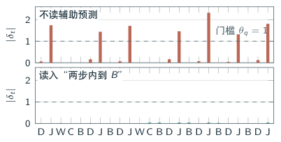
不同意见 意外大的地方未必有可学的东西：奖励本身有噪声时误差一直偏高，按意外提问会一直提，本节末的嘈杂电视讨论这一点。也有人指出门槛 要调；实验给出了 从 .5 到 2.5 的敏感度，只在这一个世界里试过。还有人主张问题应由设计者按任务写好；这在设计者懂这个世界时成立，本节针对的是设计者不知道该问什么的情形。
登记候选课件
回到章首的八步记录 。第 4 步回到 ，指示为右；第 5 步在转角向左，到了 ，没有拿到 4 分。只读当前站牌的学习器在转角预计 2.5 以上，实际得到 0 加上 的价值约 1，。从这一步回看 步：窗口从第 4 步的 开始，窗口里在 向左，此刻的站牌是 。把起点、转角走法、到达站牌、步数合起来，就得到一个候选：从 出发、在 向左，两步内到 吗？用 19.1 节的三项规格写， 在 取向左；以 表示行动前的剩余步数、 表示动作后的站牌， 答案按出发时的指示分表学：左灯时向左直达 ，答案为 0；右灯时向左到 ，答案为 1。它随指示变，带着转角需要的那一位。
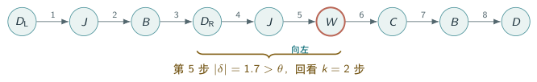
回看几步，提出器事先不知道，就在 1 至 4 步里随机取。取 得问题：从 向左，一步内是否到 ；转角看不见指示，两种行程混在一起，答案恒为 .5。取 起点是 ，同样看不见下一趟的指示，答案也是 .5；取 从上一趟的 出发，同样不随指示。约四个候选中一个随指示变。候选的语法是（起点，转角走法，到达站牌，步数 ），在这个世界里共 240 种，其中 18 种随指示变；每步至多登记一个，槽数固定。
提出这个问题的窗口是因为命中才被挑出来的，拿它检验等于先射箭后画靶。只有登记之后、每次从 出发时发起的查询，才算对新行程的预测。这个例子预先固定了可辨认的站牌、能回看的步数和窗口的拼法；它不预先指定目标必须是 。仅仅预测站牌不会产生能到达那里的技能，把走法与交回条件表示为 option 是第 21 章 21.1 节的内容。
不同意见 回看步数随机取，四个里浪费三个；也可以一次把几种长度都登记，再让替换去挑，代价是槽位更紧。也有人指出这种拼法只能提出到某个站牌的问题，问不出电量还剩多少这类累积量；候选语法仍由设计者写定，本章末的三层对照把这一点单列为一层。
延伸：带打滑读数的另一种拼法与预测的计分
到此为止，辨认站牌、记录步数的方法和目标走法都是预设的，只有答案从经验估计。若允许生成问题，第 6 步回看可发现一个新候选：在转角向左后两步内会不会到 。它将这次见过的目标、首动作和间隔保留下来；下一次到转角，按可见的历史先作预测，再用后续命中或到期来检验。提出问题的那个窗口已经按命中挑选，用它评价会高估这个候选。能够预测何时到 之后，若还要主动提高去 的成功率，须学习选动作的办法。第 20 章先让这类预测参与构造状态，第 21 章 21.1 节再以到达事件作为技能的交回条件。
设送货机器人来到距 C 两步的转角 。上一动作是前进，当时的打滑读数已经到手，把它记为 。当前又选前进，经过 ，再前进时第一次读到站牌 C。到这里，可以从这段经历提出一个此前没有登记的问题：从同一个转角先前进，以后继续按固定策略 前进，两步内能否到 C？ 在提问时已知，可以分别向刚才打滑和未打滑的机器人报概率。结果 要等以后的行动才揭晓。
这个例子只给生成器地点标签、动作、打滑传感器及一条组装规则。每读到一个地点标签 ，先看两步前的起点，再看一步前的起点。如果起点不在 、此步是从该起点出发后首次到 ，且起点的上一动作是前进，就从这段记录取出起点标签、首动作 和实际间隔 。若 尚未在册，登记本步遇到的第一个新组合。同时至多保留四个，满员时暂缓登记。这一小容量是为了让读者能逐步跟踪。设计者指定可用的信号、最长间隔和首步后的行为。哪个地点成为预测的对象、以什么首动作提问、问几步，由实际走过的窗口决定。
对这次产生的规格， 首步取 ，随后取 ，，。从尚未命中的活动窗口出发， 表示动作前剩余步数， 是动作后的地点标签。写成 GVF 便得到 第一步到站时取 。第一步未到则取 ，还可看第二步；第二步也未到取 。冻结规格后，可以在以后遇到相同起点条件时，先按 记录预测，再执行 并核验。每组用命中数除以该组完整查询数，估计的是该组起点分布下的到站概率。组成提案的那次命中不计入后续检验。若有的查询经过传感器失灵的路段，应保留未决标记，按 19.4 节的办法给界。若真实行为偏离查询策略，则需目标动作在相应历史有覆盖，并修正采样分布。White，转移上的任务规格，§2 · Horde 的目标策略与行为策略
一次预测得到分数 。例如预测 而两步均未到 C，分数为 。若给定组别与查询策略后的真实发生概率为 ，对固定预测 有 因此要用许多后续查询评价概率偏差。即使两组预测各自准确，且打滑组的到站率较低，所有可选动作在该组里仍可能具有相同的到站率；要判断改走另一条路是否有帮助，需要在可比的来路上估计另一种走法（19.5 节）。
有用怎么量课件
报得准不等于有用。从 向左后下一步是否到 这一问题的答案恒为 0，零预测的误差也是 0，对选路没有任何帮助。所以用处要按主任务来量：在同一个世界里跑两次，一次让转角的学习器多读问题 的预测，一次不读，两次见到同一串指示与随机事件（配对）， 本身已是对运行的期望，式中不再套期望；用配对运行之差的平均来估计。两支只共用外生的指示与电视序列；读入的一支动作会变，此后经过的状态也可以不同。 是第 15 章 15.1 节的全程回报，截在前 步； 是每步平均奖励，即 lifetime 率，本节末的四区仓库再把它除以天花板，报百分比。配对靠固定随机种子：第 对的两次运行共用世界种子 ，指示与电视逐步相同，学习器的随机种子也相同；配对 lifetime 评价的完整协议在第 26 章。取 ，每个问题 30 对运行，均值 标准误如下。
| 问题 | |
|---|---|
| 从 、在 向左，两步内到 | |
| 从 、在 向左，两步内到 | |
| 从 向左，一步内到 | |
| 从 向左，下一步到 | |
| 从 ，下一步电视亮 | |
| 从 ，下一步到 |
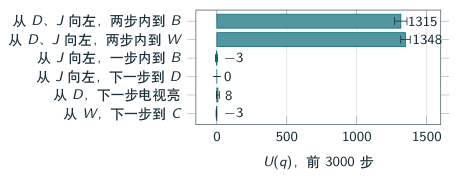
上两项从仓库出发，答案就是指示那一位，带到转角选路，三千步多拿一千三百多分；二者用处相近，因为带的是同一位信息。下面四项都在零附近：下一步到 恒为 0、下一步到 恒为 1、一步内到 恒为 .5，都不带信息；电视那一项每步随机，报不准，用处同样约为零。另有一个对照：把两步内到 学着却不让转角读，两次运行逐步相同，差恰为 0。预测只在被读来选动作时才改变回报。
这个定义贵：量一个问题要两次完整运行，240 个候选就要 480 次，而在线的学习器只活一次。下一小节换成边走边算的代理。
不同意见 配对差依赖读它的那个学习器：换一个能记住指示的学习器，这些问题的用处都会变成零，所以用处是问题与读者合起来的属性。也有人指出两个问题一起才有用的情形，单独量各自为零，配对差会漏掉这种组合；这里六个问题都单独量，没有覆盖这种情形。还有人指出三千步只看早期，学得慢的问题会被低估；实验另给出 步的结果。
替换
转角的学习器在左、右两个动作值上各有一个读第 项预测的权重 。若读数一变，两边之差也跟着变，这项预测就在左右选择里起作用。每到转角一次更新 是这项预测此刻的读数， 是它的平均，。读数从不变化，或两边读法相同，代理都是 0。替换规则：8 个槽，每 100 步检查一次，槽满时在登记满 300 步的问题里换掉 最小的，空槽留给下一次意外。
| 问题 | 代理（单独读入） | 代理（六个同读） | |
|---|---|---|---|
| 两步内到 | 1315 | 2.29 | 1.06 |
| 两步内到 | 1348 | 2.33 | 1.16 |
| 向左一步内到 | .09 | .01 | |
| 向左下一步到 | 0 | 0 | 0 |
| 下一步电视亮 | 8 | .10 | .03 |
| 下一步到 | .003 | .001 |
表中是第 3000 步的代理，30 次独立运行平均。代理把有用的两项与其余四项分开，相差二十倍以上。无用四项的配对差在 到 8 之间，都在噪声里，组内次序不必与代理一致：例如 向左一步内到 这一项配对差 、代理 .09，比配对差为零的那项还高。这不妨碍替换，因为要换掉的本来就是这一组。六个问题同读时，有用的两项各降到 1.1 左右：它们带同一位信息，读出把用量分给了二者。这时换掉其中一个损失不大，两项都读的 为 3283，只读到 这一项为 3202，配对差 ，远小于一千三百的用处；门槛若定得太死，两项却可能都被换掉。刚登记的问题读出权重为 0，代理也为 0，所以要等满 300 步才评。代理只看眼下怎么读，看不见将来会不会有用，也依赖主任务的线性读出。同一类按使用程度替换的做法见下文算法 19.3（选读）。
不同意见 有人主张按预测误差或学习进度决定换谁，那样不依赖主任务，但会留下恒为零的问题或嘈杂电视。也有人指出用读出权重当用处，在特征尺度不同时会偏向尺度小的特征；这里预测都在 0 到 1 之间，换到别的世界要先归一化。还有人主张替换看配对差的在线估计，例如随机关掉一项、看回报降多少；这更接近定义，代价是关掉的那段时间少拿回报。
两种提出方式的实验
世界是仓库主例，另加一台每步随机亮灭的电视；电视与奖励无关，只是给随机候选里掺进学不会的问题。转角处线性 Sarsa(0)，特征为常数与各槽预测，归一化步长 ，；预测按出发站牌分表，步长 .1。两种提出器都有 8 个槽、同样的替换规则，差别只在候选从哪来：随机提出从 240 种语法里均匀抽；意外触发在 时回看 1 至 4 步。每种设定 30 对配对运行，同一对共用世界的随机数。
| 转角的学习器读入 | |
|---|---|
| 无辅助预测 | |
| 学两步内到 但不读 | （与上行逐步相同） |
| 设计者给出两步内到 | |
| 随机提出，8 槽 | |
| 意外触发，8 槽 | |
| 转角直接看见指示 |
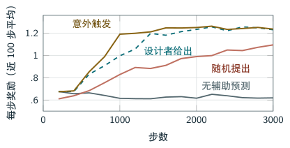
意外触发减随机提出的配对差为 ，30 对中 27 对为正。三千步里意外触发平均提出 17.6 个候选，有用的占 25%；随机提出 35 个，有用的占 7%。意外触发的运行从第 100 步起都持有有用问题；随机提出在第 100 步约一半，到第 3000 步为 87%。延长到 步，差为 ；到 步，差停在 （26/30 为正），末一万步两者每步奖励都是 1.24。随机提出最终也会找到有用的问题，它在 步里提出约 1005 个候选；意外触发约 19 个以后就不再提，因为误差已不再超过门槛。意外触发的优势在早期，长期的每步奖励两者相同。
意外触发的 比设计者给出单个问题还略高（3311 对 3202）。它结束时平均同时持有 3 个有用问题，常见的是两步内到 或 、左或右；上一小节量过，两项同读比只读一项多约 81 分，方向一致，原因没有再细分。所以两者之差部分来自同时读入几个同信息问题。设计者给出、意外触发与直接看见指示三者都贴着上限，设计者最多还能被超过 119；电视又不进奖励，没有考到意外触发的弱点。这个世界分不开意外触发与设计者给出，本章末的开放问题给出两个能分开的世界。门槛从 .5 到 2.5，意外触发的 在 3228 到 3311 之间。槽数减到 4，随机提出 1969、意外触发 2548；增到 16，两者为 2852 与 3259，差距缩小。
不同意见 这个世界里只缺一位信息，而且缺在转角，误差的位置正好指向它；缺的信息若与误差出现的地方隔得很远，回看一到四步就找不到。也有人指出随机提出的对照偏弱：语法里只有 7% 有用，换一个更窄的语法，随机提出会接近意外触发。还有人指出这里的学习器没有记忆，任何能记住指示的循环网络都会让这些问题的用处变成零；第 20 章讨论状态由谁来写。
四区仓库的电量课件
到桩步数这个问题，学习器能自己挑出；答案学得快慢更影响 lifetime 率。上面的实验里候选来自一套语法。放到第 15 章的四区仓库（读法），规律固定为 R0，再加电量：满电 步，走到东门的充电桩充满；耗尽时拖回桩，冻结 步。要不要先去充电，取决于电量与离桩多远，所以有用的量是电量减到桩的步数。本节的几步在这里换成电量：提出九个到某处的步数，用它在电量之外多解释多少拖车（）来量用处，替换时留 最高者。六种都是差分 Q 学习，只在状态里多放的量上不同：
| 学习器 | 状态里多放什么 | 问题由谁提 | 答案怎样来 |
|---|---|---|---|
| 原始电量进表 | 电量 – | ||
| 不看电量 | 无 | ||
| 给问题，逐格 TD | 电量减到桩步数，分档 | 设计者 | 逐格 TD |
| 给问题，模型学答案 | 同上 | 设计者 | 数转移、在学到的模型上值迭代 |
| 自己挑问题 | 电量减到某处步数，分档 | 学习器从 个候选里挑 | 同上 |
| 给定到桩步数 | 同上 | 设计者 | 设计者精确算出 |
自己挑问题的候选是到四扇门、四个站的步数，外加只看电量；学习器不知道哪一格是桩。它在电量之外看每个候选对接下来 步内会不会被拖车多解释了多少（），分数明显领先才换用。 万步， 个种子。天花板 是知道一切、同样做 探测时的最好每步奖励；表中的“不显著”按 Holm 校正多重比较。挑选、预测误差与 lifetime 率是三个量，分开报：挑选只看 ，控制效果看 lifetime 率。
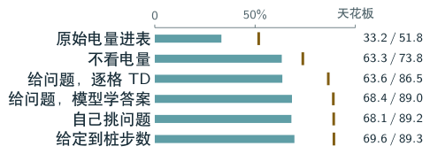
| 比较 | lifetime 率 | 最后 |
|---|---|---|
| 给定 减 不看 | ||
| 逐格 TD 减 不看 | ，不显著 | |
| 模型 减 逐格 TD | ，不显著 | |
| 自己挑 减 模型 | ，不显著 | ，不显著 |
| 原始电量 减 不看 |
不看电量学成后只到天花板的 ；看到桩步数的几种到 –。原始电量进表最差，表大 倍， 万步学不完。逐格 TD 学成后也好，但 lifetime 率与不看电量分不出：每格都要亲自走很多遍，答案学得慢，前期少得的奖励抵掉了后期多得的奖励。改成数转移、在模型上算答案，一次真实转移通过模型影响所有格，lifetime 率多 。这与 Dyna 同理：一步真实经验经过模型，被用来更新许多格；第 22 章讲技能模型与规划时会再用到这一点。自己挑问题的一种， 个种子全都挑中到东门的步数，即充电桩，结果与设计者给定的问题一样；到达天花板 的种子占 ，逐格 TD 那一种是 。
在这个世界里，提出问题可以交给学习器；答案怎样学，比问题由谁提更影响 lifetime 率。
不同意见 候选集是设计者列的，九个里就有正确的那个，所以这只说明从给定的一类里挑可行，没有说明候选怎样生成。另一种看法是，被拖车这个坏事太清楚、来得也快，换成更稀、更晚的信号，检验所需的样本会多很多。
选读：按使用程度替换问题
Rafiee 等在四房间上做的工作与本节的替换同类：按主任务读一个问题的程度决定留不留它。预测可以直接进入选路计算，也可以让辅助任务训练特征，由主任务读取这些特征。若可保存的任务数有限，该留下哪些？只要求辅助问题容易答并不够：恒为零的累积量配上零预测就可得满分。下面的算法用主任务对特征的使用程度评价整项辅助任务；调整问题生成参数的元梯度做法放在本小节末。
算法 19.3 根据主任务的特征使用程度替换候选。 Rafiee 等在四房间随机抽取一组子目标，每项辅助任务都学习尽快到达自己目标的动作价值：每步累积 ，到达即令延续为零。任务 独自训练特征组 ，主任务可以读所有组。每步用 DQN 更新主、辅动作价值，并维护各特征激活的滑动统计 。用主动作价值的读出权重 计算 。每隔固定步数，在已超过最低存续时间的候选中以新任务替换低分者，重新初始化相应特征及其连接。 衡量主任务对这组特征的使用程度。哪种替换能改善导航，论文用到达主目标的实际步数与等容量固定随机任务等基线比较。Rafiee 等，CoLLAs 2023，算法 1
算法还要事先定下候选数、最低存续时间、替换周期与每次替换的比例。每项辅助任务（每步 、到达即延续为零）都是 19.1 节意义上的一个 GVF。
算法 19.3 的伪代码
初始化主、辅动作价值网络；为各候选分配特征组 Fⱼ 并设年龄为零。
每一环境步用 DQN 更新动作价值；更新各单元平均激活 f̄ₖ，增加任务年龄。
对每项候选算 Uⱼ = Σₖ∈Fⱼ f̄ₖ Σₐ |wₖₐ|。按预定周期，在成熟候选中替换低分者。
新任务来自给定生成分布；重新初始化相关参数及年龄。用外部任务的行为表现检验其用途。
辅助问题的读出与训练作用。 选择辅助任务时，需要区分预测特征的读出权重和训练这些特征对控制的影响。设某个激活为 的特征，以同一权重 连到每个主动作值。这个特征会给所有动作加上 ，因而对任意两个动作的分差贡献为零；算法 19.3 的使用程度仍可因 很大而很高。要测部署时的作用，可以固定已学参数和同一批可达起点，仅将该组特征输入主任务读出的数值换成预定参照，再比较动作分差和实际选择。要检验该辅助任务过去是否训练出了有价值的表示，则要从共同初始化重新训练。重训时保留同样的特征容量与主任务训练预算，只去掉这项辅助目标对相应特征的更新。前一种检验看当前策略是否依赖这组输入，后一种检验看失去这条训练信号要多用多少经验才能达到约定表现。本节替换所用的代理是左右权重之差乘读数偏离平均的量，这样以同一权重连到各动作的特征在那里得零，不会被留下；代价是那个代理只对两个动作的线性读出写得出来，动作多时要改成各动作权重相对平均的偏离。Rafiee 等，式（1）–（2）及生成与检验算法
若还要推断哪种选题规则能减少将来的重学，应给各规则相同的候选问题、可用经验和维护槽数。学习器只能用已发生的任务判断用途，然后在事先留出的报酬组合上比较匹配预算的回报或达到约定表现所需的原始步。若随机候选和按用途保留的候选在精度足够的比较中同样快，就限制了这套选题规则能节约预定步数的主张。预测本身仍可在给定策略与终止条件下准确。 相关研究问题
用元梯度调整问题。 另一条路让问题本身连续可调，用主任务的改进给提问器求梯度（Veeriah 等，2019）。它属于学习怎样学习，放在第 23 章 23.7 节（算法 23.10，选读）。
选读：嘈杂电视
问下一步电视亮吗，最好的预测是一半，期望意外为 1 比特；这是公平硬币的最优交叉熵，降不到它以下。是非题的意外记为 ；预测初值 .5、步长 .1，按出发站牌分表，200 次独立运行平均，每段 50 次查询。电视那一项六段的平均意外都在 1.04 左右，略高于 1 是因为固定步长的预测在 .5 附近来回晃；两步内到 这一项第一段 .32，第二段 .024，此后约 .014。
提问器若只看哪里意外大，会一直盯着电视。研究好奇心驱动探索的文献把这种情形叫作嘈杂电视；Burda 等（2019）在迷宫里加一台可换台的电视做了这个实验。一种对策是看学习进度，即意外下降的速度；第 18 章 18.6 节把它列为一种感受（本课提法，尚未检验），以意外与学习进度作探索信号见 Schmidhuber 1991，Oudeyer、Kaplan 与 Hafner 2007。电视那一项相邻两段之差都在 以内，进度为零；两步内到 这一项第一段降 .29。有限窗口算出的进度会随机抖动，偶尔为正，电视仍可能被短暂选中；长期平均进度为零，按进度挑，长期不会挑电视。
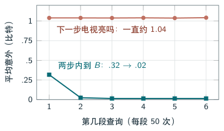
本节正文的触发读的是主学习器的 ，不看各个辅助问题的意外。电视不进奖励，主学习器的误差与它无关，所以意外触发从不提出电视问题；随机提出会提，它的用处约为 0，替换会把它换掉。另一面是，有用的问题学会以后进度也降到零（第 3 段起）。进度适合决定先去学什么；留不留，还要看对主任务的用处。
不同意见 有人主张直接用意外当内在奖励也可行，只要环境里没有不可预测的噪声；现实的传感器几乎总有噪声，这个前提很少成立。也有人指出学习进度要比较两段时间的意外，段长和步长都会影响它，噪声大时进度本身也会抖。还有人指出电视这类问题未必无用：如果奖励与电视有关，它就该留；所以挑问题最终要回到用处。
延伸：重定义预测问题与控制器的读取
学习器可以从实际观测中提出可再次判认的事件，给出查询时采用的策略及期限。命中记 ，其余为零，首次命中或期限届满时令 ，于是后来同类查询的完整回报是一个可核对的命中指示。登记新问题 后，旧答案 在新算子中的残差为 其中两个算子都能在共同的表示上计算。若新事件的历史条件在旧表示中没有保存，应先扩展状态，再谈这一分解。发现、取得有支持的经验以及该预测以后能否改变行动，分别决定在有限 lifetime 内是否值得问它。
固定随机的动作条件问题网络也能训练有用的表示，Zheng 等在 Atari 和 DeepMind Lab 都做了比较。固定问题取得相似收益时，共享预测训练已能解释部分改善。自适应选题的贡献由它相对等容量固定问题的增量衡量。Zheng 等，NeurIPS 2021，§§3–5
对于直接使用预测的控制器，还有一条更短的反馈路径。Kearney 等让 Q 学习器读取当前观测和 GVF 答案，用主任务平方 TD 误差经答案的学习更新来调整累积量与目标策略，保持折扣固定。预测一旦改变，下一次到相似位置时控制器读到的状态便会改变。作者在 Monsoon World 与 Frost Hollow 测试了这条单流路径；哪种事件值得让另一台机器人询问，还取决于它会访问的情境和承担的主任务。Kearney 等，CoLLAs 2022，§§2–4
本章小结课件
问题从哪来课件
给定问题，期望备份、多表 TD（算法 19.1）与 GQ()（算法 19.2）逼近同一个 ，差在需要什么信息、付出多少偏差与方差。问题本身从哪来，有三层做法，越往上设计者写定的越少，要学的越多。
| 层 | 设计者给出 | 学习器决定 | 代价 | 出处 |
|---|---|---|---|---|
| ① 设计者提出 | 每一项 | 答案 | 要有人懂这个世界、知道缺什么 | 19.1–19.5 节；Sutton 等 2011（Horde） |
| ② 语法搜索 | 候选语法、槽数、用处代理 | 问哪些、留哪些 | 代理只近似配对差 | 19.6 节；Rafiee 等 2023（算法 19.3） |
| ③ 梯度 | 可微的提问器 | 问题参数 | 元梯度只看有限几步展开 | Veeriah 等 2019（第 23 章算法 23.10，选读） |
三层都要回答同一件事：这个问题对主任务有多大用处（19.6 节的配对差 ）。把预测误差小当作问题选得好是常见的混淆：恒为零的累积量误差最小，用处也是零。第一、二层在仓库与世界甲、乙里比过；第三层留到第 23 章。给定问题以后，学法不改不动点，却改学得快慢：四区仓库的电量里，同一个问题用逐格 TD 学与用模型学，lifetime 率差 。
机制上的差别（本课的整理）。 三层走的是同一个循环：提出一个候选，学一阵它的答案，估计它对主任务的用处，留下或换掉。差别在两处。一是候选空间：第一层是设计者写的少数几项；第二层是离散语法下的有限候选（19.6 节的仓库里共 240 个），由意外决定先试哪个；第三层是连续参数，由梯度改动。二是用处信号怎样回来：第一层靠设计者判断，不看数据；第二层用读出程度代替配对差；第三层在有限展开上求元梯度。下面对照表的前三行之间，差别则在采样方差、自举偏差与重要性比覆盖。相关工作里，Zheng 等（NeurIPS 2021）显示固定的随机问题网络也有帮助，Kearney 等（CoLLAs 2022）走的是更短的反馈路径，两者见 19.6 节的选读；Barreto 等（NeurIPS 2017）对应 19.5 节的重新计价。
与另一种分法对照。 课程在第 13、14 章用系统 0 到 3 的分层看智能体。系统 0 是高频底层控制，系统 1 是快速的感知与动作；系统 2 是慢速的推理与规划，系统 3 学习去调节思考过程与学习过程；系统 3 是本课的提法，尚未检验。三层“问题从哪来”大致落在系统 3 一侧，它们都在调节学习器学什么。两种分法在这里只作并置，对应关系没有检验。
苦涩的教训的两种读法。 一种读法是：设计者写定的越少、交给计算与经验的越多，长远看越好，这支持往上走。另一种读法来自本章的数：在仓库里，设计者给定的问题与意外触发提出的问题拿到的回报相差不到 120，四区仓库里自己挑与给定也分不开；两层在小世界里打成平手，往上走的好处要在更大、缺的信息更难猜的世界里才看得出。
不同意见 有人认为三层并不互斥：梯度层也要设计者给提问器的结构，语法层也可以对语法本身再做搜索，分层只是方便讨论。也有人主张最上层应是端到端的循环网络，不必显式写出问题；那样能学，但答不出它在预测什么，也就无法单独检验。还有人指出元梯度讨论的是学习器怎样调自己的学习，放在讲元学习的章节更合适，这里只作选读。
五种方法的逐项对照
前三行回答给定问题怎样学答案，后两行回答问哪些问题。
| 方法 | 更新或选择什么 | 需要什么 | 代价或风险 | 仓库例或出处 |
|---|---|---|---|---|
| 期望备份 | 模型 | 无采样误差；需知道转移 | 时钟 ， | |
| 多表 TD（算法 19.1） | 每张表 向 移动 | 一条转移；离策略时乘 | 自举偏差；重要性比放大方差 | ，； 时 |
| GQ()（算法 19.2） | 、辅助 与迹 | 线性特征；覆盖 | 两组步长；只保证固定目标策略 | 一千个问题一轮约 85 毫秒 |
| 生成与检验（算法 19.3） | 低效用的候选被替换 | 候选生成器 | 效用只是代理 | Rafiee 等，2023 |
| 元梯度（第 23 章算法 23.10） | 问题参数 | 可微的提问器与展开 | 有限展开的伪损失 | Veeriah 等，2019 |
表格下，前三行共用同一个不动点 ：改学法只改变偏差、方差与所需覆盖。线性逼近下不动点可以不同：特征分不开 、 时，线性 TD 的投影不动点把两处都拟成 ，表格上的期望备份给出 与 。后两行改变的是 本身，因而改变了要逼近的对象。把预测误差小当作问题选得好是常见的混淆：恒为零的累积量误差最小，却没有用处。
问题规格 与学法： 决定真答案 ；MC、TD、重要性比校正与 GQ() 只决定怎样逼近它。改 或 换了问题；换学法只改怎样逼近 ，即偏差、方差与所需覆盖，线性逼近下还可能停在投影不动点。
自测
仓库八步轨迹 ，目标策略在转角向左，步长 （第 4 题另行给定）。
- 时钟表中若 已是真值 ，，第 5 步写成多少？为什么仍不等于 ？答要点： ，，；目标已无偏，但步长 只走一半。
- 时钟改为先到 或 即停，从 出发的样本是多少？答要点： ，第二步到 时 ，样本为 。改延续就换了问题。
- 同一条轨迹上，八步内首次到 与八步内在 的步数各取什么样本？答要点： 与 。首次到达在第 2 步记 1 后延续为零，第 7 步不计入；占用比例 不是命中概率。
- 行为在 以 向右，评价总向右的 ，，到站信号旧值 。抽到右转、抽到左转各写成多少？答要点： 右转 ，，；左转 ，不变。期望增量等于 ；取 会写成 。
- 、 时回报是多少？方程为什么定不下它？答要点： 每步累积量为 ，回报 ，真答案 ；方程成为 ，因 ，任一常数向量都是解；延续之积不衰减，。
- 两步内到 的询问里，到站信号记到到达 、记到未到 、缺失 。只用有读数的询问估计会怎样？答要点： 得 ，即 ；不作缺测假设时， 只能确定在 。
小结
本章问的是：一条行为流上，怎样并行学习多个预测，又该问哪些问题。
- 一个预测问题由 规定，奖励配常数折扣只是其中一种；答案满足 ，延续之积在期望上衰减时解唯一。
- 一条转移可以同时更新所有问题的表；目标策略与行为不同时，要覆盖与重要性比，线性逼近下用 GQ()。
- 期限与预算记进状态后，可达性仍是 GVF；缺测机制未知时只能报区间。
- 走法、转移与终止都相同时，奖励改权重只需重新计价。
- 问题可以由意外提出，按配对差的代理替换；在四区仓库里，答案学得快慢比问题是否挑中更影响 lifetime 率。
回到全程回报：从 起报两步内到 ，答案与指示一一对应，带的信息就是第 18 章要记的那一位指示。带到转角读它选路，前 3000 步的全程回报为 3202，不读为 1887。预测本身不改变回报，只有被读来选动作时才改变；只预测不读，每步多更新一张表， 不变。本章仓库里三种提出方式都贴着上限，分不开；章末的世界甲让指示换位，意外触发比只给 多 1010，世界乙要两格一起看，组合提出比单项多 892；第 20 章的世界丙把同样的检验用到状态的记忆位上。
不同意见 有人认为本章的仓库太小，问题的用处一眼可见，意外触发的优势可能来自世界恰好只缺一位；第 5 条只在这个世界里检验过。也有人主张预测问题应由端到端的循环网络隐式学出，不必显式写成 GVF；显式写出的好处是每一项都能单独检验和替换。
留下的问题。 本章所有预测都读取设计者写定的状态递推 ：指示要记住、剩余步数和预算要记入状态，都是设计者的决定。若状态不足，方程只对历史成立，表格也无从索引。预测答案能否反过来充当状态的坐标，预测误差能否指出状态还缺少哪些区别？第 20 章撤去状态递推由设计者写定这一条件。
开放问题课件
能分开提出方式的世界课件
19.6 节的仓库里，前 3000 步无辅助得 1887，设计者给出两步内到 这一问题得 3202，意外触发得 3311，转角直接看见指示是上限 3321。三者都贴着上限，设计者给出的做法最多还能被超过 119，再好的提出方式也只能在这一百多分里分高下。电视不进奖励，意外触发天生不受它干扰，这组对照没有考到意外触发的弱点。3311 与 3202 之差里还混进了读出份数：意外触发平均同时留住 3 个带同一位信息的问题，两项同读比只读一项多约 80（替换）。要分开提出方式，须换到设计者不知该问什么的世界。下面两个世界由本课设计，并已按下文的对数跑完；学习器与 19.6 节相同（转角处线性 Sarsa，8 个槽，门槛 1）。
世界甲：有用的指示会换。 仓库多一格，路线是 。每 3000 步换一次哪一格如实显示 在哪侧，另一格只显示硬币，学习器不知道。下表是 100 对独立运行、每 3000 步一段的全程回报。
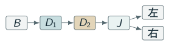
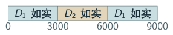
| 做法 | 有效 | 有效 | 再有效 |
|---|---|---|---|
| 无辅助 | 1505 | 1501 | 1509 |
| 设计者只给 | 2406 | 1496 | 2722 |
| 设计者两处都给 | 2401 | 2521 | 2702 |
| 意外触发 | 2452 | 2506 | 2726 |
| 随机提出 | 1787 | 2025 | 2260 |
| 学习进度替换 | 1545 | 1673 | 1678 |
| 看见有效指示（上限） | 2505 | 2818 | 2817 |
有效的阶段，只给 的学习器掉回无辅助的水平；意外触发比它多 1010（95% 区间 985 到 1034，100 对全胜），这段时间里 97% 的时间留着有用问题。原先预期差约 1300，实测小一些：仓库多一格，每趟多走一步，无辅助只剩约 1500（原先按 1887 估），可多得的部分随之变小。两处都给的设计者与意外触发分不出差别： 阶段意外触发比两处都给少 15（区间 到 13，含 0）。区间含 0 只说明这一百对分不出，不说明两者相等。所以这一组量到的是设计者不知道世界会换的代价，约一千分。
两处与预期不同。第一， 阶段，两处都给的设计者离上限 297，意外触发离上限 312，都约 300；只给 差 1322，随机提出差 793，因为只给 的设计者手里没有 的问题。提出并不慢，差距出在换位以后：转角读出的权重要从 的问题转到 的问题上，重新学要几百趟。第二，学习进度替换比随机提出还少，三段分别少 242、352、582：它按预测误差最近是否还在下降来留问题，学会的问题误差不再下降，反被当作没有进展换掉；它只留住有用问题 22% 到 35% 的时间，随机提出为 40% 到 69%。学习进度的具体算法（误差平方的快、慢两条滑动平均之差）是本课的设计选择，没有经过外部评审。
奖励噪声。 学习器看到的奖励加上标准差为 的高斯噪声，回报仍按真实奖励记。 有效的阶段：
| 0 | .5 | 1 | 2 | |
|---|---|---|---|---|
| 意外触发减只给 | 1010 | 1001 | 967 | 927 |
| 上限减意外触发 | 312 | 316 | 354 | 384 |
| 提出的候选数（全程累计） | 43 | 74 | 93 | 94 |
| 其中有用的比例 | .22 | .20 | .19 | .19 |
表中前两行是 如实的那 3000 步；候选数与有用比例按全程 9000 步累计，因为 3000 步之内最多只能提出 8 加 30、约 38 个。 时意外触发对只给 的优势为 927（区间 891 到 964），只缩小约 8%。八个槽，槽满后每 100 步至多腾出一个，9000 步的上限是 ；随机提出每次都提，累计 95 个，也贴着这条线。噪声大时转角处的误差更常超过门槛，意外触发的提出频率就退到和随机一样，候选数贴住了上限；提出的内容仍比随机好，有用比例约是随机提出（）的四倍。 为 1 和 2 时，两处都给的设计者反比意外触发多约 50，区间不含 0。原先预期噪声变大时优势缩小，方向对，幅度小。
不同意见 有人认为这组扫描可能低估了噪声的害处：槽满后每 100 步才腾出一个槽，提出频率被替换节奏卡住；替换更频繁时，噪声引出的无用候选会更多地挤掉有用问题。
世界乙：异或线索。 路线同世界甲，两格都显示硬币， 在哪侧由两格读数的异或决定，单看任一格都不带信息。
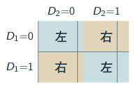
比较：单项生成与检验（意外触发，每个问题只按一格的读数查答案）；组合提出（每次提出有 .2 的机会从已留问题里各取一个起点在 、 的，拼成一个按两格读数查答案的问题）；设计者直接给出这个组合问题；上限。前 3000 步、100 对的全程回报：无辅助 1505，单项 1505（差 0，区间 到 9），设计者给组合问题 2348，组合提出 2397，上限 2505。单项法平均提出 33 个候选，没有一个有用，与预期一致。组合提出比单项多 892（区间 865 到 919，100 对全胜），离上限还差 108（区间 72 到 144）；它 97% 的时间留着有用问题，提出的候选里 16% 有用。设计者给组合问题略少于组合提出，与 19.6 节一样，组合提出常同时留住几个同信息的问题。端到端循环编码器还没有跑，组合法对它的差仍不知道。
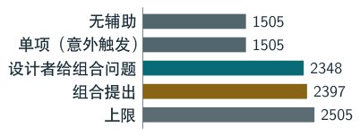
不同意见 有人认为组合法占优，是因为异或恰好能由两个已留问题拼出；线索若要三格一起看，或要跨两趟记，两两组合就不够，候选数随阶数爆炸。
对数怎样定。 新世界一律先跑 10 对预试，取各对比差的样本标准差 ，最小关心差 取上限的 5%（约 130 到 140），按 再加两成余量，其中 ： 对应双侧 5% 的检验， 对应 80% 的功效（第 24 章 24.5 节）。世界甲、乙各项比较里最多需要 93 对（意外触发对随机提出， 阶段，），所以都取 100 对。
不同意见 Jaderberg 等（2017，UNREAL）用设计者给定的几类辅助任务（像素控制、奖励预测）就在大规模环境上取得明显增益；按这一经验，自动提出预测问题的收益可能抵不上它占用的经验。本章的仓库分不开这两种看法；世界甲支持另一面：设计者两处都给时，意外触发并不多得，它多得的只是设计者没想到的那部分。也有人认为世界甲对设计者不公平：设计者若知道指示会换，会两处都给；可大世界里设计者一般不知道世界会怎样变，这就是要检验的情形。
已解决的部分课件
下表把本章已有定理或公认算法的部分列在一起，每行写结果、成立条件和代表文献。表是本课的整理，文献题名见延伸阅读。
| 结果 | 成立条件 | 文献 |
|---|---|---|
| 解唯一， | 有限状态，累积量有界， | White 2017；19.2 节 |
| 残差到误差： | 常数延续 ；残差 | Bertsekas 与 Tsitsiklis 1996 |
| 表格 TD 收敛到 | 每个状态无限次更新；，；离策略时覆盖、重要性比有界 | Jaakkola、Jordan 与 Singh 1994；Tsitsiklis 1994 |
| 线性 TD 收敛到投影不动点 | 同策略采样，链遍历，特征固定且线性无关，步长同上 | Tsitsiklis 与 Van Roy 1997 |
| GTD2、TDC、GQ() 收敛 | 线性，特征与目标策略固定，覆盖，行为遍历，两套步长 | Sutton 等 2009；Maei 与 Sutton 2010 |
| 强调 TD 收敛 | 线性，特征固定，覆盖，兴趣权重非负 | Sutton、Mahmood 与 White 2016；Yu 2015 |
| 选项模型可用于规划；表格下可在选项内部学模型 | 选项按 执行到终止 | Sutton、Precup 与 Singh 1999 |
| 改奖励权重只需重计价；广义策略改进有性能界 | 转移与终止不变，奖励对特征线性 | Barreto 等 2017 |
| 缺测：机制未知时区间最紧；抽检概率已知时加权无偏 | 区间只用全概率公式；加权要 已知，给定 后缺测与结果无关 | Horowitz 与 Manski 2000；Horvitz 与 Thompson 1952 |
线性 TD 的不动点是投影后的不动点，不是真答案：特征分不开 、 时，两处都拟成 。梯度 TD 与强调 TD 用两种办法处理离策略、自举与线性逼近同时出现时的发散。前者用第二组权重估计期望更新方向，后者按兴趣与跟随迹给每次更新加权。两种做法都要求特征固定；特征在学时没有对应的结果。
这些结果都假定问题固定、特征固定、行为平稳。持续学习里三者都可能在变。下面的问题地图，以及“要做的研究”之后的两小节，从这里出发。
还没解决的事课件
提出方式在小世界里分得开了；七个难题分落在提问、学答案、读出三处。下面沿用问题从哪来的分法，从前到后是一个预测问题经过的三步：先被提出，再学它的答案，最后被主任务读出来用。每个难题归在它出问题的那一步。这张问题地图是本课的整理，依据 19.4、19.6 节与上面三个世界。
问题从哪来，三个难题。 提出信号：嘈杂电视那一小节只说明按意外大小挑会一直盯着电视、按学习进度挑不会，两种触发各自留下的问题对全程回报的用处没有测；噪声扫描又受槽满后每 100 步才腾出一个槽的节奏限制。组合与结构：世界乙里两两组合就接近上限，是因为异或恰好由两个已留问题拼出；线索要三格一起看或要跨两趟记时，组合的阶数一高，候选数会爆炸。用处随时间变：世界甲里 的问题只在三段中的两段有用，而替换规则只看眼下的代理。旧问题什么时候该留着等它再有用、什么时候该让位，本章没有回答。
答案怎样学，两个难题。 没走过的走法：19.4 节的覆盖条件说，行为从不试的动作没有样本，GQ() 的保证也只对固定的目标策略成立；问题一多，许多目标策略要同时被覆盖。规模与函数逼近：本章的实验都是表格或线性读出、几千步，候选的语法由设计者写定。到了深网络共享特征时，辅助问题还会通过训练表示起作用（19.5 节的用法二），Zheng 等 2021 的随机 GVF 就是这样；这时一个问题的用处不再只来自被读出，配对差的解释要跟着变。
读出怎样用，两个难题。 用处的在线估计：配对差要跑两次 lifetime 才得一个样本；19.6 节的在线代理在仓库里能把有用的两项与无用的四项分开，可它只看眼下的读法，看不见将来，到更大的世界是否仍能分开，本章没有检验。换位后的读出：世界甲里指示换到 以后，两处都给的设计者离上限 297，意外触发离上限 312；只给 差 1322，随机提出差 793。前两种问题都已在手，差距出在转角读出的权重要从 的问题改读 的问题。
要做的研究课件
七个难题各有一个可检验的研究方向，也各有反对的意见。表是本课的整理，不同意见一栏写的是可能的反驳，不都出自某篇文献。
| 难题 | 要做的研究 | 不同意见 |
|---|---|---|
| 提出信号 | 有噪世界里，比较意外与学习进度两种触发的配对差 | 替换更频繁时，噪声的害处可能大得多 |
| 组合与结构 | 组合的搜索；与端到端循环编码器对照 | 端到端不必写出问题；写出的好处是每项能单独检验 |
| 用处随时间变 | 有用的时段过去后，旧问题何时保留、何时让位 | 与第 23 章可塑性、第 25 章维护是同一件事，不必单列 |
| 没走过的走法 | 行为怎样为许多目标策略同时提供覆盖 | 用模型推出（19.4 节），不必靠行为去试 |
| 规模与函数逼近 | 深网络里分开被读出与训练表示两种用处，重定配对差的读法 | 随机问题也能训练出好表示（Zheng 等 2021），挑问题未必值得 |
| 用处的在线估计 | 仓库之外检验代理能否把有用、无用两组分开；找方差小的在线估计 | 读出权重已够用：Rafiee 等按使用程度替换就有效 |
| 换位后的读出 | 问题换位后，读出怎样快速改读 | 差距属于控制学习，与问题从哪来无关 |
几行需要多说一句。用处随时间变：世界甲里 的问题在第二段没用、第三段又有用，若第二段把它换掉，第三段要重新提出、重新学，所以要研究的是旧问题的保留规则。没走过的走法：McLeod 等 2021 研究了只为预测服务的行为，见补充阅读；主任务与预测怎样分配行为还没有答案，反对意见的代价是模型知识要从别处来。规模与函数逼近：一种分开两种用处的做法是冻结网络只换读出，与从同一起点重训、切断该问题的梯度，两者对比，再据此重定配对差的读法。用处的在线估计：19.6 节的代理只能把有用与无用两组分开，组内次序不一定与配对差一致。换位后的读出：19.5 节 Anand 与 Precup 把价值分成慢、快两个分量，是一种可试的做法，在世界甲上还没有试过，这一句是本课的联想。第 20 章的世界丙把同样的检验用到状态的记忆位上，看它该写定还是该学。
下面两小节讲两个跨提问、学答案、读出三步的难题：延续接近 时的误差，挑出后的校准。
已解决的部分与条件 世界乙里线索是两格读数的异或，组合提出从已留问题里两两拼出组合问题，比单项多 892，离上限差 108。这依赖两点：阶数恰为 ；每格都已有一个起点在该格的问题可拼。
已有做法与假设 单项触发靠单格读数带来的意外下降。异或线索下，任一格单独与 的位置不相关，单项问题学不出任何东西，意外不降，触发也没有信号。学习理论里， 个比特中 个的奇偶函数是统计查询模型下难学的标准例子：只靠某特征与标签相关多少这类统计量，要在约 个候选里搜索（Kearns 1998）。
未解决的部分 阶数事先未知时，组合候选数按 增长；、 已是 个， 是 个。按意外挑与按配对差的代理，都要先有部分信号才能排序；奇偶型线索在拼齐之前不给信号。跨两趟记的线索还要求问题读历史，不只读当前格。端到端循环编码器能否更快学到这类线索，在世界乙上还没有跑。
怎样检验 在世界乙的扩展里操控线索格数 （、、）与阶数 （、）。比较单项触发、两两组合、按阶数递增的组合搜索、端到端循环编码器；基准是设计者直接给出组合问题。测首次留住有用问题所需的步数，以及前 步的全程回报。重复单位是配对的 lifetime。
延续接近 1 时的误差课件
问题 设候选答案为 ，残差 。与 相减，得 每步停止概率 很小时，误差有多大？19.2 节的唯一性条件是定性的，不给出这个数。
已知 延续恒为 时，（Bertsekas 与 Tsitsiklis 1996）。一般情形下 各元素非负，放大倍数 是从最坏的出发状态算起、延续之积总和的期望。停止稀少时，它接近停止前的期望步数。
算例：单状态时钟每步记 ，以概率 停，。表中数字按 手算。
| 每步均值多估 | 少估 | ||
|---|---|---|---|
同样的残差 ，误差是 ； 本身差 ，答案约差 。 时两种误差一样大， 时后一种大十倍。
缺什么 记录有限、停止稀少、行为与目标策略不同时，要从数据给出误差界。难处有三层。一段有限记录里可能一次停止也没有；这只说明停止概率估不准，不说明永不停止，而误差按 跟着 的估计误差变。离策略时，重要性比要沿整段不停止的路连乘，方差随步数增大（19.4 节“离策略的代价”）。函数逼近下，残差本身也不能逐点算出。现在没有一个同时处理三者的有限样本误差界。
怎样检验 操控 （、、）与记录长度，再加一档行为与目标策略不同的设置。基准是已知真值 。测两样：误差，单位是步； 区间盖住真值的比例。重复单位是一条独立记录，不是一条记录里的多个时刻。
不同意见 有人认为实际很少需要延续接近 的预测，可以截成有限期。截断改变了问题本身：带期限的问题是另一个 GVF（19.2 节）。
挑出后的校准课件
问题 19.6 节的学习器从经验流里挑出 个问题，对每个报区间 。要求整组同时覆盖： 若挑题和报区间用同一段记录，挑题偏向在这段记录上看起来准的问题，报出的区间偏窄。
已知 问题事先固定时，每题用时间一致的置信序列，即对所有时刻同时成立的区间（Howard 等 2021）；取 ，由并集界得整组覆盖，不要求各题独立。Karampatziakis、Mineiro 与 Ramdas 2021 给出上下文赌博机上离策略的置信序列。候选集有限时，可以对语法里全部候选事先分 ，比如 19.6 节的 240 个；挑哪些都不影响覆盖，代价是区间更宽。
| 做法 | 整组覆盖 |
|---|---|
| 同一段记录挑题、报区间 | 无保证，偏窄 |
| 挑后冻结，用新记录核验 | 有（并集界）；多用数据 |
| 对全部 个候选分 | 有；区间宽 |
| 候选无界，或答案靠自举 | 待证 |
缺什么 GVF 与上面的设定有三处不同。答案常靠自举、跨多步，记录前后相关，不是独立样本。候选可以组合提出（世界乙），个数没有上界，事先分不了 。累积量还会缺测（19.4 节）。Horde 说明许多预测可以在一条经验流上实时并行学，但不给整组覆盖。三处合在一起，目前没有整组覆盖的结果。
怎样检验 在真值已知的仓库里跑多个独立 lifetime，每个 lifetime 内按意外挑题，比较表中前三种做法。测两样：整组漏覆盖的频率，即至少一题真值落在区间外的 lifetime 所占比例；区间平均宽度，单位与答案相同。重复单位是 lifetime，不是一个 lifetime 里的多个问题。
不同意见 有人认为预测只给主策略用，准不准由全程回报说明，不必报区间。19.5 节的重计价直接拿预测比路线，离交点近时预测差一点就会排错，那时区间是必要的。
已解决的部分与条件 单个线性预测的步长可以在线调。IDBD 为线性监督学习设计：对每个权重维护一个对数步长，按当前误差与该维的历史更新是否同向来增减（Sutton 1992）。本章所有表都用一个固定的公共步长，如 或 。
已有做法与假设 Horde 让每个 demon 自带规格，步长由设计者给。Alberta Plan（Sutton、Bowling 与 Pilarski 2022）把持续学习、GVF、选项、模型与规划排成一条研究路线，要求一切都在一条经验流上持续发生；本章的多问题学习与问题提出对应其中的预测步骤与子问题步骤。Sutton 近年讲的 OaK（选项与知识）构想，把子问题、选项、选项模型与规划接成一个循环，本章的 GVF 与选项模型落在知识一侧；它目前是构想，本课不引用具体结果。
未解决的部分 问题多时，各问题的难易与非平稳程度不同：世界甲里 的问题换位后变得无用，到第三段又有用。公共的固定步长对一部分问题太大，对另一部分太小。逐问题、逐维的步长调节在自举、离策略与问题替换同时出现时没有收敛结果；新提出的问题从哪个步长起步，也没有准则。
怎样检验 在世界甲上比较三种做法：公共固定步长；每个问题一个固定步长，事后按网格选出；每个问题按 IDBD 在线调。操控换位周期（、、 步）。基准是公共固定步长。测每个阶段的全程回报与有用问题的预测误差。重复单位是配对的 lifetime。
补充阅读：近年工作与尾值衰减课件
这一节收两类材料：前三小节按“要解决的问题、做法、证据、局限”整理近年与 GVF 有关的工作，第四小节给出 19.2 节唯一性条件在多步备份下的证明。证据一栏只写原文报告的结果；局限一栏有一部分是本课的读法，不都是原文的话。
近年工作：预测训练表示课件
许多预测一起学，用来训练共享表示；问哪些问题，从人挑走到了随机抽、按用处挑。
| 工作 | 要解决的问题 | 做法 | 证据 | 局限 |
|---|---|---|---|---|
| UNREAL，Jaderberg 等 2017 | 奖励稀疏，表示学得慢 | 共用网络，另学控制型 GVF（让像素变化最大）与奖励预测 | DeepMind Lab 平均达人类专家 （A3C ），原文报告学得快约 倍；Atari 平均 | 辅助任务由人挑 |
| 随机累积量，Lyle 等 2021 | 奖励为零时表示塌缩 | 对随机生成的累积量学价值 | 理论：表示与转移算子的谱分解相连；据此为稀疏奖励选辅助任务，Atari 上检验 | 理论用简化的学习动态 |
| 随机 GVF，Zheng 等 2021 | 辅助问题从哪来 | 随机网络给出累积量与动作条件的问题，成批作辅助任务 | Atari 与 DeepMind Lab 上与价值预测、像素控制、CURL 相当；切断主任务梯度，只靠它们学的表示胜过端到端 actor-critic | 问题多；哪些起作用不清楚 |
| 按用处挑，Veeriah 等 2019；Rafiee 等 2023 | 人挑的问题未必有用 | 对主回报求元梯度调问题参数；或按主任务读特征的程度替换 | 见第 23 章与算法 19.3 | 元梯度计算量大；读得多未必有用 |
UNREAL 在 A3C 的网络上另加几个头：一个头学怎样让画面某一块的像素变化最大，这是 Horde 里那种控制型 demon 在深度网络里的版本；另一个头预测接下来的奖励；还有一个从回放里重学价值。这些头只用来训练共享的卷积和循环层。局限是辅助任务由设计者挑出，适合迷宫的像素控制，换到别的世界未必合适。Lyle 等从理论上问辅助任务为什么能改善表示：奖励一直为零时，只学价值会让表示塌缩，因为目标处处为零；用随机生成的累积量学价值，可以避免这一点。Zheng 等让累积量和问题网络都随机生成，问题可以以动作为条件，比如先向左、再向上之后，这个随机特征的累积值是多少。这个结果说明问什么这件事可以很随便，只要问得多、问得有结构；问题数量多，哪些问题真的起作用，这个做法本身不回答。
读这张表要注意两点。是否学得快，要在同样的交互与算力预算下比主任务的学习曲线，辅助损失下降本身不说明这一点。各行证据来自不同任务与比较协议，不作跨论文排序；UNREAL 的 Atari 平均分用的又是另一组游戏。
这几项工作有共同的结构：预测头和主任务共用表示，预测只经由表示影响主策略，对应 19.5 节的用法二。19.6 节的仓库不同，那里预测的答案直接进状态，被主任务读来选路。
不同意见 有人认为随机 GVF 的结果说明该问什么这一选择没那么重要，问得多就够了；也有人认为在大世界里随机问题绝大多数无用，按用处挑才可扩展。本课的仓库实验倾向后者，但仓库太小，不足以下结论。
出处：Jaderberg 等，ICLR 2017；Lyle 等，AISTATS 2021；Zheng 等，NeurIPS 2021；Veeriah 等，NeurIPS 2019；Rafiee 等，CoLLAs 2023。
近年工作：预测充当状态课件
预测答案直接写进状态，在假肢、驾驶上已有用例；难处是问题要人给，覆盖要行为给。
| 工作 | 要解决的问题 | 做法 | 证据 | 局限 |
|---|---|---|---|---|
| 假肢切换，Pilarski 等 2012 | 肌电假肢逐个切换关节，慢 | 实时 TD 学下一个会用哪个关节，按预测排切换顺序 | 标准操作任务上，期望切换时间比最好的固定顺序少 以上 | 作者称结果是初步的 |
| 驾驶，Graves 等 2021 | 真车上在线探索代价高 | 多时间尺度预测车道居中与道路角度，作策略的输入；全部离线学 | 报告对新路形、破损与干扰车道泛化好 | 预测问题按车道保持专门设计 |
| GVF 网络，Schlegel 等 2021 | 循环网络靠截断的时间反传，对截断长度敏感 | 隐状态的每一维约束为一个 GVF 的答案，用 TD 学 | 对截断长度更稳，许多情形一步梯度就够 | 问题集合要人给 |
| 后继特征，Barreto 等 2017 | 奖励变了要重学 | 累积量取特征向量 ，奖励取 ；多个旧策略上做 GPI | 学之前就有性能下界；见第 22 章 22.7 节 | 奖励须对 线性 |
| 为预测收集数据，McLeod 等 2021 | 许多预测要的数据，行为未必给 | 行为按预测的改进挑动作；预测用后继特征学 | 把后继特征与奖励分开学，收敛更快 | 只为预测服务，未兼顾主任务 |
前三行是 19.5 节用法一（预测进状态）的实例；后两行对应 19.5 节的重新计价与 19.4 节的覆盖。假肢切换一项和 Nexting 同出一组人，是 GVF 在人机协作中最早的用例之一：Pilarski、Dawson、Degris、Carey 与 Sutton 在机械臂上实时学接下来会用到哪个关节，按预测给出切换顺序。驾驶一项预测车道居中程度和道路角度在多个时间尺度上的将来值，这些预测是以若照某种方式开下去为条件的 GVF，策略读这些预测来转向；数据全部离线收自真实道路，避免在真车上在线探索。GVF 网络要求循环网络隐状态的每一维都预测某个累积量在某个延续下的将来值；这就是第 20 章的主题：预测答案能否充当状态；它的问题集合由人给出，与 19.6 节问题从哪来这一问是同一个难题。后继特征一项里，累积量取一个特征向量，GVF 的答案也是一个向量。若奖励是这些特征的线性组合，任何奖励下的价值都可以由答案乘权重得到；这就是 19.5 节电量例的一般形式。McLeod 等研究的行为不为主任务服务，只为许多辅助预测服务，按哪个预测还能改进来挑动作；主任务与预测怎样分配行为，还没有答案。
不同意见 有人认为应用里的成功都依赖人设计的问题，说明 GVF 的价值在于给工程师一种表达工具，而不在于自动发现；也有人认为，这就是下一步的研究方向：从这些人设计的问题出发，看学习器能否自己提出同样有用的问题。
出处：Pilarski 等，BioRob 2012；Graves 等，ICRA 2021；Schlegel 等，JAIR 2021；Barreto 等，NeurIPS 2017；McLeod 等，NeurIPS 2021。
GVF 之外的同类做法课件
下面几类做法都在学预测将来，差在预测几步、预测什么、答案怎样用。
| 做法 | 预测什么 | 与 GVF 的关系 | 证据 | 差别与局限 |
|---|---|---|---|---|
| 预测状态表示，Littman 等 2001 | 做完一串动作后看到一串观测的概率 | 每个检验是一个开环走法、到检验结束即停的 GVF | 个隐状态的有限 POMDP 有线性 PSR，检验数 | 检验是有限长的动作序列 |
| TD 网络，Sutton 等 2004 | 预测的将来值 | 一个预测的目标是另一个预测：预测的预测 | 提出框架，小型世界上演示 | GVF 网络的前身 |
| 后继表示，Dayan 1993 | 将来到每个状态的折扣次数 | 每个状态一个累积量（到达记 ）；后继特征是它的特征版 | 改善 TD 学习的泛化 | 随策略变；状态多要逼近 |
| 世界模型，Ha 等 2018；Hafner 等 2025 | 下一步的潜在状态与奖励 | 只学一步；长程靠模型展开，GVF 直接学长程累积 | DreamerV3 一套设置胜过 多个任务上的专门方法；从零在 Minecraft 采到钻石 | 展开多步，一步误差会累积 |
| 自预测表示，Schwarzer 等 2021 | 几步后自己的表示 | 累积量取自身的表示，同 TD 网络 | Atari 100k 中位人类归一化分 | 目标随表示一起动 |
预测状态表示用一组预测本身作状态。Littman 等证明：有 个隐状态的有限 POMDP，系统动态矩阵的秩至多为 ，因此有一个线性 PSR，核心检验不超过 个。用 GVF 的话说，检验是一个按固定动作序列走、到序列结束即停、累积量为观测指示的 GVF；差别是检验长度有限，而且是开环的动作序列，GVF 允许任意目标策略和随状态变的延续。TD 网络让一个预测的学习目标是另一个预测在下一步的值，形成预测之间的网络，也是第 20 章预测充当状态的早期形式。后继表示里，每个状态 一个累积量，到达 记 ，其余记 ，所有这些 GVF 的答案排成一个向量；后继相似的状态，表示也相似。世界模型与 GVF 可以用一条式子连起来：表格情形下，一步模型可解出任一 GVF， （19.2 节）。逼近时误差的去处不同，模型的一步误差会在展开中累积，GVF 的误差留在各自的问题上；第 22 章讨论在模型上规划。自预测表示的目标随表示一起动，原文用缓慢更新的目标编码器稳住它，这和第 10 章的目标网络是同一个办法。
不同意见 有人认为世界模型已经包含 GVF：有了模型，什么问题都能现算；也有人认为长程预测直接学更省、更稳，模型展开的误差在长程问题上无法接受。本课的立场是二者互补：常问的长程问题直接学成 GVF，不常问的用模型现算。
出处：Littman 等，NIPS 2001；Sutton 与 Tanner，NIPS 2004；Dayan，Neural Computation 1993；Ha 等，NeurIPS 2018；Hafner 等，Nature 2025；Schwarzer 等，ICLR 2021。
多步备份的尾值衰减课件
命题 多步备份何时消去初始尾值。 固定一个问题和充分状态。设累积量有界，，问题与策略平稳。用两个有界函数 分别充当 步之后的尾值。沿同一条路径，两项展开包含完全相同的前 个累积量。相减并对目标策略取期望便得 若 ，则两边取绝对值与上确界，得 。所以 有唯一不动点 ；又因 ，唯一性给出 。对两步内到站的问题，状态包括余步数，任一路径的两步延续乘积为零，故 。这说的是两次完整期望备份；样本算法还要访问各个相关状态，两次实收转移一般不够填满两步问题的整张表。若可以永久停留在一个 的区域，这一充分条件可能失效。这里的多步上确界范数界直接来自轨迹展开，转移延续记号沿用 White 的任务规格。White，2017，§§2–3
延伸阅读
- Sutton 与 Barto，《Reinforcement Learning: An Introduction》第 2 版（2018），§17.1–17.2：通用价值函数、累积量与选项模型的教科书写法，可对照本章 19.1、19.5 节的记号。
- Sutton、Modayil、Delp、Degris、Pilarski、White 与 Precup，Horde: A scalable real-time architecture for learning knowledge from unsupervised sensorimotor interaction，AAMAS 2011：一条行为经验流上并行学许多 demon 的原型，读后能看清 19.3、19.4 节的算法从哪里来。
- Modayil、White 与 Sutton，Multi-timescale nexting in a reinforcement learning robot，Adaptive Behavior（2014）：在真实机器人上按多个时间尺度实时学数千个预测，给出 19.3 节 Nexting 的规模与计时。
- Maei 与 Sutton，GQ(λ): A general gradient algorithm for temporal-difference prediction learning with eligibility traces，AGI 2010：线性离策略 GVF 的更新式与收敛条件，是算法 19.2 的出处。
- White，Unifying task specification in reinforcement learning，ICML 2017：把折扣、终止与期限写成转移上的延续，19.1 节的记号与 19.2 节的期限问题都用这一写法。
- Sutton、Precup 与 Singh，Between MDPs and semi-MDPs，Artificial Intelligence 112（1999）：选项与选项模型的原始出处，读后能把 19.5 节的两类 GVF 接到第 21 章的技能。
- Barreto 等，Successor features for transfer in reinforcement learning，NeurIPS 2017：共用策略与延续的预测按新奖励权重重新组合，即 19.5 节的重新计价，第 22 章 22.7 节再用它组合技能。
- Bertsekas 与 Tsitsiklis，Neuro-Dynamic Programming，Athena Scientific（1996）：给出压缩映射、残差到误差的界与随机逼近的收敛条件；界按 放大，延续接近 时很松，见开放问题。
- Jaakkola、Jordan 与 Singh，On the convergence of stochastic iterative dynamic programming algorithms，Neural Computation 6（1994）；Tsitsiklis，Asynchronous stochastic approximation and Q-learning，Machine Learning 16（1994）：证明表格 TD 与 Q 学习在步长条件下收敛；没有函数逼近，也不给有限样本误差。
- Tsitsiklis 与 Van Roy，An analysis of temporal-difference learning with function approximation，IEEE Transactions on Automatic Control 42（1997）：证明同策略线性 TD 收敛到投影不动点，并给出误差界；离策略时结论不成立。
- Sutton、Maei、Precup、Bhatnagar、Silver、Szepesvári 与 Wiewiora，Fast gradient-descent methods for temporal-difference learning with linear function approximation，ICML 2009：GTD2 与 TDC 在离策略线性情形下收敛；要求特征与目标策略固定。
- Sutton、Mahmood 与 White，An emphatic approach to the problem of off-policy temporal-difference learning，JMLR 17（2016）；Yu，On convergence of emphatic temporal-difference learning，COLT 2015：强调 TD 按兴趣与跟随迹加权，使离策略线性 TD 稳定并收敛；跟随迹的方差可能很大。
- Hansen 与 Hurwitz，The problem of non-response in sample surveys，JASA 41（1946）；Horvitz 与 Thompson，A generalization of sampling without replacement from a finite universe，JASA 47（1952）：对无应答者再抽样复核、按已知抽样概率的逆加权，都给出无偏估计；都要求概率已知。
- Horowitz 与 Manski，Nonparametric analysis of randomized experiments with missing covariate and outcome data，JASA 95（2000）：缺测机制未知时，只用全概率公式给出最紧的区间；区间怎样沿 Bellman 方程传播，没有讨论。
- Howard、Ramdas、McAuliffe 与 Sekhon，Time-uniform, nonparametric, nonasymptotic confidence sequences，Annals of Statistics 49（2021）；Karampatziakis、Mineiro 与 Ramdas，Off-policy confidence sequences，ICML 2021：给出对所有时刻同时成立的置信序列及其离策略版本；对象是独立样本或赌博机，不含自举与挑题。
- Jaderberg 等，Reinforcement learning with unsupervised auxiliary tasks，ICLR 2017：辅助预测经共享表示加快学习；辅助任务由人挑，读出与表示两条路没有分开量。
- Kearns，Efficient noise-tolerant learning from statistical queries，Journal of the ACM 45（1998）：说明奇偶函数在统计查询模型下难学，对应世界乙的异或线索；序贯决策里怎样提出问题，没有讨论。
- Sutton，Adapting bias by gradient descent: An incremental version of delta-bar-delta，AAAI 1992：IDBD 为线性学习在线调逐维步长；用于许多自举的 GVF 时没有收敛结果。
- Sutton、Bowling 与 Pilarski，The Alberta Plan for AI Research，arXiv:2208.11173（2022）：把持续学习、GVF、选项与规划排成一条研究路线；路线上的多数步骤还没有完成的算法。
练习
以下各题按节次排列，所用数值都是本章算例中的设定；本章小结里的自测题不再重复。
- （19.4）行为在 以 向右，目标策略总向右，连续三次这样的决策相互独立。重要性比之积 不为零的概率、不为零时的值和方差各是多少？取 、，三次都抽到右转时，GQ() 的旧迹放大多少倍？Retrace 的系数之积至多是多少？核对： 、、；每步乘 ，三步约 倍；Retrace 每步系数 ，三步至多 。
- （19.4、19.5）状态里没有记住指示时，向左一步内到 吗这一问题在转角只能给一个值。两种情形各占一半，最小平方误差的答案是多少？把在 算出的两步内到 的预测写进状态后，策略的每步奖励由多少变成多少？核对： ，两处误差都是 ；总向左时平均每趟 分、 步，每步 分；照预测转弯后每趟三步得 分，每步 分。
- （19.2）右灯转角向左，经 到 ，三步耗费 。分别求剩余 、、 时首次到 的概率，并指出后两种情形各在哪一步令延续为零。核对： 、、； 在第二步只到 、到期； 在第二步累计耗费 ，超支。
- （19.5 用法二），。写出合梯度与主梯度的内积关于 的式子，说明 与 时主损失各怎样变。核对： 内积为 ； 得 ，主损失降； 得 ，主损失升。
- （19.5 重新计价）快路线 ，慢路线 ，。电价 多大时两条路线得分相同？ 与 时各选哪条？这样换权重要哪两项共用？核对： ，； 时 对 ，走快路线； 时 对 ，走慢路线；两项 GVF 须共用目标策略与延续。
- （19.5 选项）选项去 从 经 、 到 ，只在 一步得 分，到 时 ，别处 。取 ，逐步写出两类模型的延续与累积量，求 与 。核对： 前两步 ，延续都是 ；奖励模型的累积量依次为 ，得 ；转移模型只在第三步交回时记 ，乘前两步延续得 。